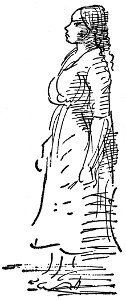
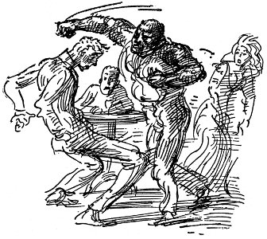
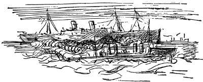

birleşik amerika savaşta
bütün kent ulusu yücelt diye bağırıyor
İşte orada
İşte orada
Colt Patentli Ateşli Silahlar Yapım Şirketi'nin yıllık toplantısında hisse senedi sahiplerine 2.500.000 dolarlık fazla kazanç bölüştürüldü. Sermaye artırımı yapıldı. Bu yılki kâr yüzde 259
ingilizlerin mutlu şaşkınlığı
Yankiler geliyor
İşte biiz gee-li-yoruz
zencileri beyazların yaşadıkları bölgelerden uzaklaştırmak için yasa çıkarılacak
Chicago dolaylarında golf için milyonlar harcandı Hintli kışkırtıcılar ülkenin her yanında korku içinde Armour besin sanayii Birleşik Amerika'nın dünyayı açlıktan kurtarmasını istiyor
bayrağa hakaret edenler cezalandırılacak
İşçi milletvekilleri Rusya için tehlike Londra'da kulaktan kulağa dolaşanlara göre yapılanlarda şerefsiz bir barış belirtisi var
müttefikler için milyarlar verildi
Dönmeyeceğiz yurdumuza
İşimiz bitene kadar orda
Sine-Göz (27)
rahipler rahibeler vardı Espagne'da Atlantik camgöbeği yeşildi fırtınalıydı lumbar kapakları sıkıca kapanmıştı güvertelerdeki tüm ışıklar gizlenmişti kibrit bile çakamazdın
ama kamarotlar çok yürekliydi nasıl olsa Almanların Compagnie Generale şirketinin gemilerini batırmayacaklarını söylediler rahipler rahibeler yüzünden Cizvitler yüzünden Comite des Forges söz vermişti büyük tasfiye fırınlarının bulunduğu Bassin de la Briey'i bombalamamaya çünkü şirketin stokları Bourbon Prensi'nindi Cizvitlerindi rahiplerindi rahibelerindi
her neyse herkes çok yürekliydi Amerika Kızılhaçı'ndan Albay ve Mrs. Knowlton dışında tıpkı Eskimo giysileri gibi su geçirmez soğuk geçirmez denizaltı geçirmez giysileri vardı bunları sırtlarına geçirip giysileri pufla gibi şişmiş bir tek yüzleri görünerek oturdular güvertede ceplerinde ilkyardım çantacıkları kemerlerine sıkıştırılmış su geçirmez kılıfları içinde sütlü çikolataları bisküvileri vitaminli süttozu olurdu
sen sabahları güvertede dolaşırken Mrs. Knowlton'u şişiren Mr. Knowlton olurdu orada
ya da Mr. Knowlton'u şişiren Mrs. Knowlton
kaskatı siperli yeni Amerikan asker kasketleri çizgili haki kumaştan giysilerinin üzerinde keskin nişancı madalyaları olan Roosevelt'lerin delikanlı çocukları da çok yürekliydi gün boyu konuşup dururlardı Biz de girmeliyiz Biz de girmeliyiz
sanki savaş yüzme havuzuymuş gibi
barmen çok yürekliydi kamarotlar çok yürekliydi hepsi de yaralar almışlardı kamarot oldukları siperlerde olmadıkları için de çok mutluydular
çörekler de nefisti
sonunda bölgemize girdik rotamız zikzaklıydı sessizce barda oturduk sonra Gironde Dağı'nı gördük sabahın inci gibi yumuşacık saatlerinde bir Fransız hücumbotu çevremizde dönüyordu mayın tarlaları yüzünden buharlı gemiler devriye gezen teknelerin peşine takılmıştı parlak kızıl üzüm bağlarının üzerinde güneş kıpkırmızı yükseliyordu Gironde şileplerle uçaklarla savaş gemileriyle doluydu güneş içinde
Garonne kırmızıydı gri yüzlü evlerin önündeki rıhtıma taze şarap fıçıları mermi kovanları sıralanmıştı sonbahardı bodur teknelerin direkleri koskoca kırmızı demir köprüye karşı yığılmıştı.
Yedi Kız Kardeşler Oteli'nde herkes yas içindeydi ama işler canlıydı savaş yüzünden her an Paris'ten hükümetin gelmesi bekleniyordu
kuzeyde siperlerde çamurda ölüyorlardı ama Bordeaux'da iş hayatı iyiydi üzüm üreticileri gemi acenteleri sahipleri silah yapımcıları Chapon Fin'e doluştular yelvekuşu mantar yermantarları yediler büyük de bir yazı vardı
mefıez-vous
Les orieles ennemis vous ecoutent[22]
kırmızı şarap alacakaranlık sapsarı çakıl taşlı alanlar kıyılarında şarap fıçılarıyla çevrili parkta çikolata kokusu gri heykeller sonra sokak adları
Yitik Umutlar Sokağı Yasaların Ruhu Sokağı Unutulmuş Ayak Sesleri Sokağı
Sonra yanmış yaprakların kokusu şarap kırmızısı alacakaranlıkta ufalanan gri yüzlü Bourbon evleri
Yedi Kız Kardeşler Oteli'nde gecenin ilerlemiş saatlerinde yatağına girdikten sonra ansızın uyandın bir gizli servis ajanı bavullarını arıyordu
pasaportuna bakıp kaşlarını çattı kitaplarına göz attı dedi ki Monsieur c'est la petite visite[23]
Savaşçı Bob
La Follette, Primrose kent sınırları içinde doğdu. On dokuz yaşına gelinceye kadar Wisconsin'de, Dane Country'de çiftlikte çalıştı.
Çalışırken Wisconsin Üniversitesi'nde okudu. Tiyatro oyuncusu olmak istiyordu, güzel konuşma sanatı, Robert Ingersoll, Shakespeare, Burke üzerine incelemeler yaptı;
(kim açıklayabilir geçen yüzyılın üzerinde Shakespeare'in etkilerini, Sezar'ın tabutuna kapanmış Marcus Antonius'u, Venedik Senatosu'nda Othello'yu ve Polonius'u, her yerdeki Polonius'u?)
diploma töreninden sonra küçük bir arabayla evine dönerken büyük tiyatro oyuncusu Booth'tu, baskıya karşı çıkan yazılarıyla ünlü on yedinci yüzyıl yazarı Wilkes'ti, Tanrı'ya karşı çıkan Daniel Webster'di, Ingersoll'du, uzun, beyaz togaya bürünmüş, büyük ve ağırbaşlıydı, Roma demokrasisinin tüm görkemiyle yaşadığı yüzyıllardan olağanüstü biçimde fışkıran heykeller kadar dürüsttü;
sınıfındaki en iyi tartışmacıydı,
Iago'nun kişiliği üzerine yaptığı konuşmayla eyaletler arası tartışmayı kazandı.
Hukuk bürosunda çalışmaya başladı, bölge savcısı olmak istedi. Okul arkadaşları ona oy sağlamak amacıyla geceleri ev ev dolaştılar. Seçimlerde büyük paralar yatırılarak oynanan oyunları bozdu, kazandı.
Eyalette Cumhuriyetçilerin oy toplamak için çevirdikleri oyunlara karşı çıkan delikanlının başkaldırısıydı bu,
Madison'da posta müdürlüğü yapan, seçim mekanizmasının iplerini elinde tutan, bölgeyi peşinden sürükleyen Keyes öylesine bir şaşkınlığa kapıldı ki az kalsın iskemlesinden yuvarlanıyordu.
Artık La Follette'in evlenmesine yetecek geliri vardı. Yirmi beş yaşındaydı.
Dört yıl sonra Kongre seçimlerine girdi, üniversite yine onun yanındaydı, en genç adaydı. Seçimi kazandığında Beyaz Saray'daki en genç temsilciydi.
Politikacıları da tıpkı sattığı odunlar gibi istifleyip satan Wisconsin'li kereste kralı Philetus Sawyer onu Washington'dakilerle tanıştırdı.
Cumhuriyetçi'ydi, seçim oyunlarını bozmuştu. Şimdi onu avuçlarının içine alacaklarını düşündüler. Washington'a gidip de namuslu kalabilmiş tek kişi bile yoktu o güne kadar.
Booth, o kış Shakespeare oynadı Baltimore'da. Kardeşinin acı anısı yüzünden Booth hiçbir zaman Washington'da oynamıyordu. Bob La Follette'le eşi bütün gösterilere gittiler.
Eyalet panayırı sırasında Milwaukee'de, Plankinton Oteli'nin oturma salonunda seçim dalaverelerinin etkin kişisi, kereste kralı Sawyer, Cumhuriyetçi eyalet saymanının duruşmasında yargıçlık yapan kayınbiraderini etkilemesi için ona rüşvet vermeye çalıştı;
Bob La Follette, öfkeden bembeyaz kesilmiş olarak çıktı otelden. O günden sonra da Cumhuriyetçilerin oy mekanizmasını darmadağın edip vali seçilinceye kadar Cumhuriyetçilerin oy toplamak için başvurdukları bütün düzenbazlıklarla gözünü kırpmadan savaştı;
işte bu on yıllık savaşın sonunda Wisconsin örnek eyalet oldu, kendi görüşlerinden hoşnut, düzen tutkunu Alman, Finlandiyalı, İskandinav seçmenler, yeni güçlerini kullanmayı, aday adaylarını seçmeyi, halk oylamasını, seçimin iptal edilmesinin yollarını öğrendiler.
La Follette demiryollarına vergi koydu
John C. Payne, Washington'da, Ebbitt House salonunda bir politikacılar topluluğuna, “Kesintisiz beş bin millik demiryoluna karşı koyabileceğini düşünüyorsa La Follette kahrolasıca bir salaktır, yanıldığını da görecektir . . . Zamanı gelince biz onun hesabını görürüz,” dedi.
Oysa zamanı gelince Wisconsin'li çiftçiler okuldan daha yeni çıkmış genç hukukçular, doktorlar, işadamları
onun hesabını gördüler
üç kez vali seçtiler
sonra da Birleşik Amerika Senatosu'na seçtiler,
orada hayatı boyunca istatistiklerle dolu uzun konuşmalar yaparak, demokratik hükümeti kurtarmaya çalışarak, çiftçileri, küçük işadamlarını kendi güvenceleri için örgütlemeye uğraşarak, yapayalnız, sırtını yalnızca duvara dayayarak, ahlaksızlıkla, rüşvetle, büyük iş çevreleriyle, yüksek finans kurumlarıyla, tröstlerle, dalavereler ve dalaverelerle, Washington'un insanı zehirleyen uyuşukluğuyla savaşarak çalıştı.
“Kendininkinden başka hiçbir düşünceyi dile getirmeyen” bir avuç inatçı adamdan biriydi
Woodrow Wilson'un Almanya'yla savaşı kesinleştiren savaş gemileri yasa tasarısına karşı çıkanlardan biriydi. Korsanlık dediler bu tasarıya, ama yalnızca altı yürekli kişiydiler, her şeyi ezip geçen çılgın silindiri çıplak elleriyle durdurmaya çalışıyorlardı;
basın, La Follette'e karşı okurlara kin aşıladı,
hain dedi ona;
Illionis'te simgesel olarak resimlerini yaktılar;
Wheeling'de konuşmasına engel oldular.
Bin dokuz yüz yirmi dörtte La Follette Boston adayı oldu, parasız ve bir siyasal örgütten yoksun, dört buçuk milyon oy topladı,
ama hasta bir adamdı, sürekli çalışmak, komite salonlarının, yasama meclisindeki odaların pis havası boğmuştu onu
politikacıların pis kokusu boğmuştu,
öldü,
yitip gitmiş görkemli cumhuriyetin meclis kürsüsünden söylevler veren, konuşmacı;
ama biz hatırlayacağız
bin dokuz yüz on yedide, Woodrow Wilson ikinci kez seçildiğinde nasıl da dimdik oturduğunu, üç gün boyunca o koskoca oy mekanizmasını nasıl durdurduğunu. Onu konuşturmuyorlardı, halk dinleyici olarak oturuma katıldığı balkonlardan nefretle bakıyordu ona. Senato onu linç edecek gibiydi,
yüzü kırış kırış, bodur, dar geçitte ayağının birini öne atmış, kollarını kavuşturmuş bir adam, ağzının köşesinde çiğnenmiş bir puro
masasının üzerinde okuyamadığı söylevi,
kendininkinden başka hiçbir düşünceyi dile getirmeyen bir inatçı adam.
Charley Anderson
Charley Anderson'un annesi, Kuzey Dakota'da, Fargo'da, Kuzey Pasifik istasyonu yakınında demiryolcular için pansiyon işletirdi. Sivri çatılı, ahşap, her yanı sundurmalarla çevrili, hardal sarısı, çerçeveleri çikolata rengi bir evdi bu, arka avluda, mutfak kapısının yanındaki bir direkten, yıkılmış kümesler dizisine doğru gerilmiş sarkık iplerde hep asılı çamaşırlar olurdu. Mrs. Anderson, alçak sesle konuşan, kır saçlı, gözlüklü bir kadındı. Kiracılar ondan korkar, yataklar, yiyecekler, yumurtaların bayatlığı konusundaki yakınmalarını Kuzey İrlandalı, badi badi yürüyen, koca kollu yardımcıya, tüm yemekleri pişirip işleri gören Lizzie Green'e yöneltirlerdi. Delikanlılardan bazıları eve sarhoş gelirse, havı dökülmüş erkek paltosunu geceliğinin üzerine geçirip dışarı çıkarak onları susturan da yine Lizzie olurdu. Bir gece frencilerden biri Lizzie'ye asılmaya çalıştı, çenesine yediği sert yumrukla ön sundurmadan aşağı yuvarlandı. Charley küçükken onu yıkayan, temizleyen, okula zamanında yollayan, dizleri sıyrıldığında merhem, soğuktan çatlayan yerlerine yumuşak sabun süren, giysilerini onaran da hep Lizzie'ydi. Mrs. Anderson Charley doğmadan önce üç çocuk büyütmüş, hepsi de evden ayrılmışlardı, bu yüzden artık Charley'le ilgilenemiyordu. Mr. Anderson da, Charley doğduğu sıralar evden ayrılmıştı. Mrs. Anderson'un anlattığına göre ciğerlerinden hasta olduğu için Batı'ya gitmek zorunda kalmış, oraların sert kışlarına dayanamamıştı. Mrs. Anderson hesapları tutar, mevsimine göre çilek, fasulye, şeftali, bezelye, domates, armut, erik konservesi, elma püresi yapar, her gün Charley'e İncil'den bir bölüm okutur, kilisenin işlerine koşardı.
Charley, tıknaz, dağınık sarı saçlı, gri gözlü bir çocuktu. Kiracılar onu okşar, onunla oynarlardı, iki kez kiliseye, bir de Pazar Okulu'na gitmek zorunda olduğu pazar günleri dışında, her şey çok hoştu. Her pazar hemen akşam yemeğinin ardından annesi ona İncil'den Aziz Matta, Ester ya da Rut bölümlerini okur, o hafta için çalışmakla görevlendirildiği bölümlerden sorular sorardı. Bu dersleri pencerenin yanında, kırmızı örtülü, üzeri sarısabır, telgrafçiçeği, begonya, eğrelti otu saksılarıyla yaz kış dolu masada yaparlardı. Charley'in bacakları karıncalanır, yemiş olduğu ağır yemek uykusunu getirir, annesinin üstü kapalı biçimde belirttiğine göre, Pazar Okulu'nda ya da kendisine İncil okurken hep Charley'i izlemekte olan Ruhülkudüs'e karşı günah işlemekten ödü patlardı. Kışları mutfak büyük bir sessizliğe gömülürdü, yalnızca sobanın çıtırtısı, Lizzie'nin ağır ayak sesleri, yıkamış olduğu bulaşıkları dolaba dizerken ağır ağır soluması duyulurdu. Yazları daha da kötüydü. Öteki çocuklar Red River'da yüzmeye gitmekten, balık tutmaktan, kereste deposunda kovalamaca oynamaktan, demiryolu araçlarının bulunduğu binanın arkasındaki kömürlüklerde oynamaktan söz ederler, fistolu kurdelelerin aralarına sıkışmış ya da sinekliğe yapışmış sinekler güçsüzce vızıldar, yan hatta yük katarlarını geçiren lokomotifine durmaksızın Winnipeg'e giden trenin istasyondan geçerken çaldığı düdüğü, kampana seslerini duyar, kaskatı yakalığının içinde tere batar, kaşınır, duvarda gürültüyle çalışan porselen saate bakar dururdu ikide bir. Saate çok sık bakmak zamanın çok yavaş geçiyor görünmesine neden olurdu. Bu yüzden de on beş dakika geçtiğine kesinlikle güvenmeden bakmamaya çalışır, ama baktığında yalnızca beş dakika geçmiş olduğunu görerek umutsuzluğa kapılırdı. Belki de tam orada Ruhülkudüs'e karşı günah işlemek, bir kez her şeyi göze alıp istediğini yapmak, Dolphy Olsen gibi yük şilebine binip kaçmak en iyisiydi, ama bunu yapmayı göze alamıyordu.
Liseye gitmeye hazır olduğu sıralar İncil'de garip şeyler bulmaya başladı, kereste deposu çitinin arkasındaki yabanıl otlarla dolu hendekte oynamaktan bıktıklarında çocukların anlattıklarına benzer şeyler, Onan'la, Levi ve karısıyla ilgili bölümde, Süleyman'ın Meselleri'nde pansiyonda kalan demiryolu işçilerinin aralarında konuştuklarından kulağına çalınanlar gibi içinde garip duygular uyandıran, yüreğini çarptıran bir şeyler vardı. Artık kötü kadınların ne olduğunu, kadınların karınları şiştiğinde buna neyin yol açtığını biliyor, kaygılanıyor, annesiyle konuşurken böyle şeyleri bildiğini onun anlamamasına çalışıyordu.
Charley'in ağabeyi, Jim, Minneapolis'te kiralık at ahırı olan birinin kızıyla evlenmişti. Charley'in sekizinci sınıfı bitirmeye hazırlandığı ilkbahar Mrs. Anderson'u görmeye geldiler. Jim evin içinde puro içti, annesine şakalar yaptı, o evdeyken İncil okumanın sözü bile edilmedi. Bir pazar günü Jim, Charley'i Sheyenne'de balık tutmaya götürdü, okul bittiğinde Twin Cities'e gelirse, karısının babasının ahırının bir bölümünde kuracağı garajda ona iş verebileceğini söyledi. Yazın kentte iş bulduğunu okuldaki çocuklara söylemek çok hoşuna gitti. Ablası Esther de hemşirelik kursuna katıldığı kentten dönmüştü, sürekli kötü sözler söylediği, giysilerini temiz tutmadığı, çok börek yediği için dırdır edip duruyordu, bu yüzden de oradan ayrılacağına seviniyordu.
Esther'in ödünç verdiği bavul elinde, tek başına, Twin Cities'e giden trene binmek için Moorhead'e doğru yola çıkarken çok mutluydu. İstasyonda bir paket sigara almaya çalıştı, ama büfedeki adam ona takılarak çok küçük olduğunu söyledi. Yola çıktığında oldukça sıcak, güzel bir ilkbahar günüydü. Köprüde un çuvallarıyla dolu arabaları çeken koca atların sağrıları terlemişti. İstasyonda beklerken hava boğucu oldu, yapış yapış bir sis çöktü. Demiryolu boyunca sıralanmış tahıl ambarlarının geniş arka cephelerinde güneş ışığı kıpkırmızı parlıyordu. Bir adamın, arkadaşına, “Bana kasırga patlayacak gibi geliyor,” dediğini duydu. Trene binince, bulutlara kadar dümdüz uzanan, parlak yeşil buğday tarlalarının ötesinde, kuzeybatıda toplanmaya başlayan fırtına bulutlarına bakarak pencereden dışarı sarktı. Birazcık da istiyordu kasırganın patlamasını, çünkü hiç görmemişti böyle bir şey, ama bulutların arasından kırbaç gibi şimşekler çakmaya başlayınca, kondüktörün de öteki yolcuların arasında olmasından ötürü güven duymasına karşın biraz da korktu. Kasırga değildi ama kötü bir fırtınaydı bu, her yanı döven ıslıklar çalan yağmur damlaları altında buğday tarlaları çinko tabakaları gibi görünüyordu. Sonra yine güneş açtı, Charley camı indirdi, her yerde ilkbahar kokusu vardı, huş ağacı ormanlarında, küçük, pırıl pırıl göllerin çevresindeki karanlık gürgen ağaçlarında kuşlar cıvıldaşıyordu.
Jim, Ford kamyonla Union İstasyonu'na onu karşılamaya gelmişti. Yük indirme yerinde durdular. Charley, Detroit'ten gemiyle gönderilmiş, üzerlerinde “Vogel'in Garajı” yazılı, ağır yedek parça paketlerinin yüklenmesine yardım etti. Büyük kentte yetişmiş görünmeye çalışıyordu ama tangırdayan tramvaylar, parke taşlarından kıvılcımlar çıkartan araba atlarının nalları, güzel sarışın kızlar, dükkânlar, büyük Alman birahaneleri, fabrikalardan, işliklerden gelen uğultular başını döndürüyordu. Jim, işçi tulumunun içinde ince ve uzun görünüyordu, yeni bir kısa, kesin konuşma biçimi geliştirmişti. Kamyonu yükleyip arabalarla dolu sokakta ağır ağır ilerlerlerken, “Bana bak oğlum, evde kendine çekidüzen ver, bizim moruk yaşlı bir Alman'dır, bütün yaşlı Almanlar gibi de azıcık titizdir,” dedi. “Elbette, Jim,” dedi Charley, Minneapolis'te yaşamanın ne biçim bir şey olacağını düşünerek de biraz tedirginlik duydu. Keşke Jim biraz daha gülümseseydi.
Yaşlı Vogel, bodur, kırmızı yüzlü, dağınık kır saçlı, koca göbekli, salçalı yahnileri, börekleri, birayı seven bir adamdı. Jim'in karısı Hedwig de onun tek kızıydı. Karısı ölmüştü, ama herkesin Hartmann Teyze dediği orta yaşlı Alman kadın ev işlerini yapıyordu. Elinde yer beziyle erkeklerin peşinde dolaşır dururdu. Sonbaharda bebeği olacağı için mavi gözlerinde hep sinirli bir anlatım bulunan Hedwig'le bu kadın evi öylesine temiz tutarlardı ki, yerlere bal döküp yalanabilirdi. İçeri toz girer korkusuyla camları hiç açtırmazlardı. Ev tam caddenin üzerindeydi, arkada bulunan kiralık at ahırına, yeniden düzenlenip garaj yapılmış olan saracın bulunduğu yan sokaktan girilirdi. Jim'le Charley merdivene çıkıp eski tabelayı sökerek, üzerinde parlak kırmızı ve beyazla, “Vogel'in Garajı” yazılı yenisini takarlarken, “Moruk pezevenk,” diye mırıldandı Jim. “Bana, ‘Vogel ve Anderson' yazdıracağını söylemişti, ama neyse.” Her yer ahır kokuyor, bir zenci, sıska, üzerine battaniye örtülmüş bir atı götürüyordu.

Yaz boyu Charley arabaları yıkadı, çarkları, milleri kuruttu, frenleri ayarlardı. Yağlı işçi tulumu içinde, her yanı kirli paslıydı, her sabah saat yediden gecenin geç saatlerine kadar çalışıyordu, sonra da garajın tavan arasında kendisi için hazırlanan uydurma yatağa serilip uyumaktan başka şey yapacak gücü kalmıyordu. Jim, ona haftada bir dolar cep harçlığı veriyor, işi öğrenmek Charley'in yararına olduğu için bu yaptığının büyük cömertlik olduğunu açıklıyordu. Cumartesi geceleri banyoya en son o girerdi, su buz gibi soğumuş olduğundan da bir türlü temizlenemezdi. Yaşlı Vogel sosyalistti, kiliseye gitmez, pazar günleri akşama kadar bira içip dostlarıyla çene çalardı. Pazar günü yemekte herkes Almanca konuşur, Jim'le Charley suratlarını asarak tek sözcük etmeden otururlar, ama Yaşlı Vogel önlerine bira yığar, onlara Hedwig'le Hartmann Teyze'yi kahkahalarla güldüren şakalar yapar, yemekten sonra Charley başını döndüren, ama kendini içmek zorunda duyduğu sert bira yüzünden rahatsız olur, Yaşlı Vogel ona takılır, puro yakmasını, dışarı çıkıp kenti gezmesini söylerdi. Karnı tıka basa doymuş, başı dönerek dışarı çıkar, St. Paul'ü, eyalet hükümet binasını, Harriet Gölü'nü görmeye gitmek için tramvaya biner ya da Big Island Parkı'na giderek çarpışan arabalara biner, dizlerinde derman kalmayıncaya kadar parkın yollarında dolaşırdı. Önceleri kendi yaşında hiç tanıdığı yoktu, bu yüzden de kitapları arkadaş edindi. Popular Mechanics'in, Scientifie American'ın, Adventure'ın, Wide Worid Magazine'in bütün sayılarını alırdı. Scientifie American'daki çizimlere bakarak yelkenli yapmayı, Mississippi Nehri'nden körfeze kadar gitmeyi tasarlıyordu, ördek vurarak, pisibalığı avlayarak yaşayacaktı. Tüfek almak için para biriktirmeye başlamıştı.
İncil okumak ve kiliseye gitmek zorunda olmadığı için Yaşlı Vogel'in yanında yaşamak hoşuna da gidiyordu. Motörlerle oynamayı seviyordu, Ford kamyonu kullanmayı öğrenmişti. Bir süre sonra sokağın sonunda oturan Buck ve Slim Jones kardeşleri tanıdı. Kendi yaşındaydılar. Garajda çalıştığı için onların üzerinde üstünlük kurmuştu. Buck gazete satar, sinemalara çıkış kapısından parasız girme yöntemleri geliştirir, bütün top oyunlarının en iyi izlenebileceği çitleri bilirdi. Jones kardeşleri tanıdıktan sonra Charley pazar günleri yemek biter bitmez hemen onların evine gider, tahıl kamyonlarının arkasına takılarak, tramvaylara asılarak bütün kenti dolaşır, eğlenir olmuştu. Kimi zaman aynasızlar onları kovalar, kereste yığınlarının üzerinde kent dışına çıkarlar, yüzmeye, çağlayanların üzerindeki tepelere tırmanmaya giderlerdi, her yanı ter içinde, en iyi giysisini kirletmiş olarak geri döndüğünde Hedwig yemeğe geç kaldığı için onu azarlardı. Yaşlı Vogel, Jones kardeşleri garajın çevresinde görünce kovalardı, ama o ya da Jim orada olmadıkları zaman seyis zenci Gus, at kokuları içinde yanlarına gelir, atlar, ateşli kadınlar, Louisville'de viski içtikleri günler üzerine öyküler anlatırdı. Bir kızla ilk kez birlikte dışarı çıkıldığında nasıl davranılacağını, sürekli sevgilisi olan kızla bütün gece bir an bile durmaksızın nasıl seviştiğini ayrıntılarıyla açıklardı.
İşçi Bayramı'nda[24] Yaşlı Vogel, Jim'i, kızını, Hartmann Teyze'yi, satması için kendisine bırakılan bir çift güzel doru ata sürülmüş arabayla gezmeye götürdü. Charley'i de garaja baksın, benzin ve gaz isteyen olursa satsın diye bıraktılar. Buck'la Slim geldi, o günün İşçi Bayramı olduğundan, gezmeye gidecek paralarının bulunmamasının ne büyük bir haksızlık olduğundan konuştular. Panayır yerinde beyzbol karşılaşması vardı, daha birçok top oyunu oynanıyordu çevrede. Charley'in kamyonu nasıl süreceğini Buck'a göstermesiyle sorunlar başladı, sonra daha iyi göstermek için motoru çalıştırdı, kendisi bile ne yaptığını anlayamadan onları gezdireceğini söylüyordu. Sokakta şöyle bir dolaştıktan sonra geri dönüp garajı kilitlediler, kamyonla Minnehaha'ya doğru yol almaya başladılar. Charley kendi kendine, kamyonu çok dikkatli kullanacağını, ötekiler gelmeden saatler önce de eve döneceğini düşünüyordu, ama nasıl olduysa geniş asfalt yolda hız yapmaya başladı, bir ara ansızın önüne çıkan küçük kızlarla dolu at arabasıyla az daha çarpışıyordu. Geri dönerlerken, şişeyle gazoz içip çok eğlendikleri bir sıra Buck bir aynasızın motorla peşlerine takılmış olduğunu söyledi. Charley aynasızdan kurtulmak için hızlandı, bir dönemeci çok keskin aldı, telgraf direğine çarparak gürültüyle durdu. Buck'la Slim son hızla koşarak kaçtılar, Charley tek başına aynasızla baş başa kaldı.
Aynasız İsveçli'ydi, sövdü, saydı, azarladı, ehliyetsiz araba kullandığı için deliğe tıkacağını söyledi, ama Charley koltuğun altında Jim'in ehliyetini bularak ağabeyinin Minnehaha'ya bir kamyon elma boşalttıktan sonra arabayı garaja götürmesi için verdiğini anlattı, aynasız bundan böyle daha dikkatli kullanmasını söyleyerek bıraktı. Çamurluklarından birinin ezilmesi, direksiyonunun da biraz çarpılması dışında kamyonda hasar yoktu. Charley öylesine yavaş kullandı ki eve vardığında radyatör su kaynatmıştı, küçük at arabası evin önündeydi, Gus atları tutuyor, herkes daha yeni aşağı iniyordu.
Söyleyebileceği tek şey yoktu. Hepsi birden üzerine saldırdılar, en çok da Hartmann Teyze bağırıyordu, Yaşlı Vogel, yüzü mosmor olmuş söyleniyor, hepsi de Almanca konuşuyorlardı. Hedwig ceketinden çekip yüzüne bir tokat attı, herkes Jim'in onu kırbaçlaması gerektiğinde diretti. Charley çok içerlemişti, hiç kimsenin kendisini kırbaçlayamayacağını söyledi. Jim de, “En iyisi sen Fargo'ya dön,” dedi. Charley yukarı çıkıp bavulunu topladı. O gece, koltuğunun altında gemicilikle ilgili bir derginin son beş sayısı, öteki elinde bavuluyla kimseye “Hoşça kal” demeden evden ayrıldı. Yalnızca Barnesville'e kadar bilet alacak parayı biriktirebilmişti. Sonra da Moorhead'de trenden ininceye kadar kondüktörle saklambaç oynadı. Annesi onu gördüğüne sevindi, lise açılmadan gelip kendisini görecek zamanı ayırdığı için iyi bir çocuk olduğunu, yakında kutsanacağını söyledi. Charley, çarptığı kamyondan hiç söz etmedi, hiçbir Tanrı'nın cezası kilisede kutsanmayacağını geçirdi kafasından. Lizzie'nin hazırladığı kahvaltıyla güzelce karnını doyurup odasına çıkarak yattı. Kutsanmak istememesinin Ruhülkudüs'e karşı işlenmiş bir günah olup olmadığını merak ediyordu, ama bu düşünce onu eskisi kadar korkutmuyordu. Gece boyu trende uykusuz gittiği için ansızın ağırlık bastı, uykuya daldı.
Charley, akşamları Moorhead Garajı'nda ufak tefek işler görerek birkaç yıl liseye gitti ama Twin Cities'e yaptığı yolculuktan sonra buraları sevmez olmuştu. Annesi pazar günleri çalışmasına izin vermiyor, kutsanması konusunda kafa ütülüyordu. Esther her konuda kafa ütülüyordu, Lizzie de ona hâlâ küçük bir çocukmuş gibi davranıyor, kiracıların önünde, “küçük pisi” diyordu. Okuldan da bıkmıştı, böylece on yedi yaşına bastığı ilkbaharda lise diplomasını alınca yine Minneapolis'e, ama bu kez kendine iş bulmaya gitti. Birkaç gün geçinecek parayı biriktirdiği için yaptığı ilk iş Big Island Park'a gitmek oldu. Çarpışan arabalara binmek, atış alanında atış yapmak, yüzmek, kız arkadaş bulmak istiyordu. Hiçbir zaman hiçbir olayın geçmediği Moorhead, Fargo gibi bayağı kasabalardan bıkmıştı.
Göle vardığında hava kararmak üzereydi. Küçük buharlı gemi iskeleye yanaşırken ağaçların arasından bandonun sesini, çarpışan arabaların gürültüsünü, içindekilerin bağırışlarını duyabiliyordu. Bir dans salonu, ağaçların arasında renk renk ışıklar, havada kızların süründüğü kokuların, patlamış mısırın, şekerlemelerin, atış alanından gelen barutun kokusu vardı. Çığırtkanlar kulübelerin önünde bağrışıyorlardı. Pazartesi akşamı olduğu için ortalık çok kalabalık değildi. Charley birkaç kez çarpışan arabaların yanına gitti geldi, bunları işleten çocukla orada iş bulma olanağı üzerine konuştu.
Çocuk biraz oyalanmasını, yönetici Svenson'un on birde kapatırlarken geleceğini, belki birine gerek duyacağını söyledi. Çocuğun adı Ed Walters'tı, bu işte pek para olmadığını, Svenson'un çok katı biri olduğunu anlattı. Arabaların nasıl çalıştığını görmesi için birkaç kez parasız binmesine izin verdi, bir şişe gazoz aldı ona, sinirlenmemesini söyledi. Eğlence yerlerinde bu ikinci yılıydı, sivri, kurnaz bir yüzü, zeki tavırları vardı.
İriyarı, çökük yüzlü, dağınık sarı saçlı bir adam biletlerin koçanlarını almaya geldiğinde Charley'in yüreği güm güm atıyordu. Bu Svenson'du. Charley'i tepeden tırnağa süzdü, onu bir hafta deneyeceğini, burasının sessiz bir aile yeri olduğunu unutmamasını, tatsızlık istemediğini, ertesi sabah onda gelmesini söyledi. Charley, Ed Walters'a, “Hoşça kal,” diyerek kente dönmek için son vapurla, tramvaya yetişti. Tramvaydan indiğinde istasyona gidip bavulunu alması için çok geçti, ne bir odaya para vermek ne de Jim'in evine gitmek istiyordu. Bu yüzden de Belediye Binası'nın önündeki sırada uyudu. Sıcak bir geceydi, hep serserilik eden biri gibi sıranın üzerinde uyumak hoşuna gitmişti. Ark lambalarının ışığı gözüne giriyor, aynasıza yakalanmaktan da korkuyordu. Serseri yerine konarak enselenmek, bulduğu işi yitirmek rezalet olurdu. Sabahın ilk saatlerinin alacakaranlığında uyandığında dişleri birbirine çarpıyordu. Ark lambalarından uçuk limon sarısı gökyüzüne pembe ışıklar vuruyordu, bomboş pencereleriyle büyük işyerlerinin gülünç, gri, bırakılmış bir görünüşü vardı. Kanının yine damarlarında dolaşmasını sağlamak için topuklarını hızla yere vurarak çabuk çabuk yürüdü.
Beş sente çörekle kahve içebileceği bir büfe buldu, ilk tramvayla Minnetonka Gölü'ne gitti. Hafif kuzey rüzgârının estiği pırıl pırıl bir yaz günüydü. Göl masmaviydi, huş ağaçlarının gövdeleri beyazdı, yaprağını dökmeyen ağaçların koyu yeşiline, gökyüzünün koyu mavisine karşı yaprakları yeşilimsi sarı dans ediyordu rüzgârda. Charley burasının gördüğü en güzel yer olduğunu düşündü. Adaya giden gemilerin kalkmasını beklerken iskelenin sonunda, güneşte uyukladı. Vardığında park kilitliydi. Bütün küçük kulübeciklerin kepenkleri inikti, çarpışan arabalar, kırmızı, mavi, duran arabalar sabah ışığının altında kimsesiz, bırakılmış görünüyordu. Charley bir süre çevrede dolaştı ama gözleri acıyor, bacakları ağrıyordu, bavulu çok ağırdı. Bir kulübeciğin duvarının rüzgârdan korunmayı sağladığı bir yer buldu, çam iğnelerinin üzerine uzandı, bavulu yanında uykuya daldı.
Ürküntü içinde uyandı, Ingersoll marka saati on biri gösteriyordu. İçinde soğuk, ağır bir duygu vardı. Geç kaldığı için işini yitirirse korkunç bir şey olurdu. Svenson bilet gişesinde oturmuştu, ensesine devrilmiş hasır şapkası vardı. Geç kaldığı konusunda hiçbir şey söylemedi. Paltosunu çıkarıp, onarımları yapan MacDonald'a motorun yağlanmasında yardımcı olmasını istedi.
Eylülde park kapanıncaya kadar yaz boyu Charley orada çalıştı. Ed Walters'la ve bir de şekerleme satan Spagnolo adında İtalyan'la Excelsior'da kamp yerinde kalıyordu.
Yanlarındaki kampta da Svenson altı kızıyla birlikte kalıyordu. Karısı ölmüştü. En büyükleri Anna otuz yaşlarındaydı, eğlence parkında biletçiydi, ikisi Tonka Bay Oteli'nde garsonluk yapıyordu, ötekiler liseye gidiyor, çalışmıyorlardı. Hepsi de uzun boylu, sarışın, güzel kızlardı. Charley en küçükleri olan, kendi yaşlarındaki Emiscah'a âşık oldu. Bir salları ve bir de tramplenleri vardı, birlikte yüzmeye gidiyorlardı. Charley yaz boyu açık gömlek, haki pantolon giydi, güneşte yandı. Ed'in kız arkadaşı Zona'ydı, dördü park kapandıktan sonra, özellikle de ayın parladığı sıcak gecelerde kayıkla geziyorlardı, içki içmiyorlar, ama sigara tüttürüyor, plak çalıyor, kayığın dibinde birbirlerine sarılıp öpüşüyorlardı. Erkeklerin kampına vardıklarında Spagnolo yatağında uyur olurdu, ona tatsız şakalar yapıyorlar, yatağının içine ateşböcekleri atıyorlar, onun söverek, kendini oradan oraya atmasını izliyorlardı. Emiscah çok güzel tatlılar yapıyordu, Charley onun için çıldırıyordu, o da kendisinden hoşlanıyor gibiydi. Ona Fransız usulü öpüşmeyi öğretti, saçını okşayıp kedi gibi sürtünür, ama hiçbir zaman fazla ileri gitmesine izin vermezdi. Charley de doğru bulmuyordu bunu zaten. Bir gece dördü dışarı çıkıp kampların arkasındaki ormanda bir açıklıkta, çam ağacının altında ateş yaktılar. Ateşte tatlı kızarttılar, hortlak öyküleri anlattılar. Yanlarında battaniyeleri vardı, Ed çam dallarını yere batırarak yatak yapmayı biliyordu, dördü de aynı battaniyenin altına girdiler, birbirlerini gıdıkladılar, güldüler, uzun süre uyuyamadılar. Bir süre Charley iki kızın arasında yattı, kızlar ona sokuldular, Charley erkeklik organının sertleştiğini duydu, uyuyumadı, kızlar anlar diye çok tedirgin oldu.
Dans etmeyi, poker oynamayı öğrendi, İşçi Bayramı gelip çattığında hiç para biriktirememiş, ama çok güzel bir yaz geçirmişti.
Ed'le birlikte St. Paul'de oda tuttular. Northern Pasifik işliklerinde onarım yardımcısı olarak iş buldu, iyi para kazanıyordu. Elektrikli tornayı kullanmayı öğrendi. Yüksek Makine Mühendisliği Okulu'nda inşaat mühendisi olmak için gece derslerine devam etmeye başladı. Ed'in işten yana talihi pek yoktu, arada bir bovling salonunda top toplayarak birkaç dolar kazandığı işler buluyordu. Pazar günleri genellikle yemeklerini Svenson'larla yiyorlardı. Mr. Svenson, Dördüncü Cadde'de Leif Ericsson adında bir küçük sinema işletiyordu ama işleri pek iyi değildi. Delikanlıların iki kızıyla nişanlandıklarına kesin gözüyle bakıyor, onların gelişine seviniyordu. Charley, her cumartesi akşamı Emiscah'ı dışarı çıkarıyor, ona şekerleme almak için bir sürü para harcıyor, vodvillere, daha sonra dans da edilen bir Çin lokantasına götürüyordu. Yılbaşında kıza mühür yüzüğünü verdi, bundan sonra da kız nişanlandıklarını açıkça söylemeye başladı. Svenson'ların evine döndüklerinde oturma odasındaki sedirde birbirlerine sarılıp öpüşüyorlardı.
Kız onun coşkuya kapılmasından hoşlanıyordu, sonra ansızın ayağa kalkıp saçını düzeltmeye ya da yüzünü boyamaya gidiyor, uzun süre kalıyor, üst katta kız kardeşleriyle kıkırdaşıyordu. Çiçekli abajurun altında bir tek ışığın yandığı oturma odasını enine boyuna arşınlarken Charley çok sinirli, istek dolu oluyordu. Ne yapacağını bilemiyordu. Kendisini ülkeyi gezmekten, mühendislik çalışmalarında ilerlemekten alıkoyacağı için de evlenmek istemiyordu. İşyerindeki öteki çocuklar genelevlere gidiyorlar, sokak kadınlarıyla düşüp kalkıyorlardı. Ama Charley hastalık kapmaktan korkuyordu. Hem gece okulundan falan böyle şeylere ayıracak zamanı yoktu, zaten onun istediği de Emiscah'tı.
Dili ağzının içinde dolaşır, burun deliklerine kızın saçları dolar, ağzının içinde kızın ağzının tadını duyarak son bir kez tutkuyla onu öptükten sonra kulaklarında çınlamalarla, bitkin, güçsüz eve yürürdü. Yatınca uyuyamaz, gece boyu çıldıracağını düşünerek kendini oradan oraya atardı. Ed yatağın öteki ucundan, Tanrı aşkına durmasını isteyerek söylenirdi.
Şubat ayında Charley'in boğazı ağrıdı, gittiği doktor difteri olduğunu söyleyerek hastaneye gönderdi. Kendisine antitoksinler verildi, günlerce korkunç hastaydı. İyileşmeye başladığında Ed'le Emiscah görmeye geldiler, yatağının kenarına oturarak onu avuttular. Ed çok şık giyinmişti, yeni bir iş bulduğunu, çok para kazandığını söyledi, ama işinin ne olduğunu anlatmaktan kaçındı. Charley, hastalandığından beri Emiscah'la Ed arasında bir şeyler başlamış olduğunu sezdi, ama bunun üzerinde pek durmadı.
Yan yatakta, difteriyi yeni atlatmakta olan Michaelson adında, ince, uzun, kır saçlı bir adam vardı. Kış boyu hurdacıda çalışmış, çok zor günler geçirmişti. Birkaç yıl öncesine kadar Iowa'nın mısır yetiştirilen bölgesinde çiftliği vardı, ama ürün vermeyen iki yıl onun işini bitirmişti, banka ödeyemediği borçlar yüzünden tarlasını elinden almış, ortakçı olarak çalışmasını önermişti, ama o başkası için ortakçı olarak çalışırsa Tanrı'nın belasını vermesini söyleyerek pılısını pırtısını toplamış, kente gelmişti. Şimdi elli yaşındaydı, bakmak zorunda olduğu bir karısı, üç küçük çocuğu vardı, yeniden sıfırdan başlamaya çalışıyordu. Ateşli bir Bob La Follette yanlısıydı. Borsa bankerlerinin, çiftçileri yoksullaştırarak hükümeti ele geçirip ülkeyi yönetmek için dolaplar çevirdikleri kuramını geliştirmişti. Hemşire gelip susturuncaya kadar, gün boyu, alçak, hırıltılı bir sesle Partiler Üstü Birleşme'den, Köylü-İşçi Partisi'nden, büyük Kuzeybatı'nın yazgısından, Bob La Follette gibi adamları seçmek için işçilerin, köylülerin birlik olmaları gereğinden konuşup duruyordu. Charley o sonbaharda Amerikan İşçi Federasyonu'nun bir toplantısına katılmıştı, hırıltılarla, öksürüklerle kesilen Michaelson'un konuşması onda politikaya karşı coşku, merak uyandırdı. Gazeteleri daha çok okumaya, dünyada olup bitenleri daha yakından izlemeye karar verdi. Şu savaş ve her türlü karışıklık yüzünden ne olacağı bilinemezdi.
Michaelson'un karısıyla çocukları görmeye geldiklerinde Charley'i onlarla tanıştırdı, böylesine pırıl pırıl, akıllı bir gencin yanında yatmanın hastalığı zevk haline getirdiğini söyledi. Charley, hepsinin de nasıl solgun, aç göründüklerine, bu dondurucu soğukta giysilerinin ne denli yetersiz olduğuna bakarak çok üzüldü. Michaelson'dan önce çıktı hastaneden. Onun kuru, kemikli elini sıkmak için yatağına eğildiğinde söylediği son şey, “Oğlum, Henry George'u oku, duyuyor musun? Bu ülkenin zoru nedir bilir o, bilmiyorsa kahrolayım,” oldu.
Charley yeniden ayağa kalktığı, buz gibi rüzgârda, kar içindeki sokaklarda yürüdüğü, kafasından iyodoform kokusunu, hasta insanların kokusunu attığı için çok seviniyordu, adamın söylediklerini unuttu.
İlk iş olarak Svenson'ların evine gitti. Emiscah ona Ed Walters'ın nerede olduğunu sordu. Eve gitmediğini, bilmediğini söyledi. Kız bunları duyunca kaygılandı, Charley de nedenini merak etti. “Zona bilmiyor mu?” diye sordu. “Yok, Zona yeni bir herif buldu, ondan başkasını gözünün gördüğü yok.” Sonra gülümseyip oğlanın elini okşadı, biraz cilvelendi, sedire oturdular, biraz tatlı çıkardı, el ele tutuştular, yapış yapış ağızlarıyla öpüştüler, Charley çok mutluydu. Anne geldiğinde çok zayıfladığını, onu biraz beslemeleri gerektiğini söyledi, Charley akşam yemeğine kaldı. Mr. Svenson kendini toparlayıncaya kadar gelip her akşam onlarla yemek yemesini istedi. Yemekten sonra hepsi ön odada kâğıt oynadılar, çok eğlendiler.
Charley kaldığı eve dönünce girişte ev sahibiyle karşılaştı. Arkadaşının kirayı ödemeden gittiğini, hemen şimdi parayı vermezse onu yukarı, odasına bırakmayacağını söyledi. Charley kadınla tartıştı, hastaneden daha yeni çıktığını söyledi, sonunda kadın bir hafta daha kalmasına izin verdi, iriyarı, pörsük görünüşlü, buruşuk yanaklı, bir sürü cebi olan sarı basma önlüklü bir kadındı. Kış boyu Ed'le paylaştığı odasına girince içerisinin korkunç soğuk ve yapayalnız olduğunu gördü. Buz gibi çarşafların arasına, yatağa girdi, titreyerek, kendini çok güçsüz, çocuk gibi, ağlamaya hazır duyarak Ed'in hangi cehennemin dibine gittiğini, kendisine niçin haber bırakmadığını, nerede olduğunu bilmediğini söylediğinde Emiscah'ın niye öyle garipleştiğini merak ederek yattı.
Çok güçsüz olmasına, pek bir işe yaramamasına karşın ertesi gün işliğe gidip eski işine girdi. Ustabaşı oldukça anlayışlı davrandı, birkaç gün kendini zorlamamasını söyledi ama hasta olduğu süre için para veremeyecekti, çünkü eski bir işçi değildi, şirket doktorundan da rapor almamıştı. O gece, bir zamanlar Ed'in çalışmış olduğu bovling salonuna gitti. Üst kattaki içki satan adam Ed'in piyangodan çıkan bir saat konusunda bazı dolaplar çevirdiğini, bu yüzden de Chicago'ya gitmek zorunda kaldığını söyledi. “Bana sorarsan zamanında tüydü,” dedi. “O herif hiç de sağlam pabuç değildi.”
Jim'den aldığı mektupta, annesinin onun için kaygılandığını, ona arada bir uğramasını istediğini yazıyordu, bu yüzden de ertesi pazar Vogel'lere gitti. Jim'i görünce ilk söylediği şey kamyonu çarpmasının çocukça bir aymazlık olduğuydu, bunun üzerine el sıkıştılar, Jim, kimsenin bu konuyu açmayacağını, kendileriyle yemek yemesini söyledi. Yemek çok iyiydi, bira çok iyiydi. Jim'in çocuğu çok sevimliydi, amca olduğunu düşünmek garibine gidiyordu. Hedwig bile eskisi kadar sinirli değildi. Garajdan iyi para kazanıyorlardı, Yaşlı Vogel ahır işletmeyi bırakıp emekli olacaktı. Charley gece okulunda okuduğunu söyleyince Yaşlı Vogel ona daha bir özen göstermeye başladı. Biri La Follette üzerine bir şey söyledi, Charley de onun büyük adam olduğundan söz etti.
“Eğer yanlış bir yol tuttunsa büyük adam olmanın yararı ne?” dedi Yaşlı Vogel, bıyığına bulaşmış bira köpükleriyle. Bardağından bir yudum daha alarak pırıl pırıl mavi gözleriyle Charley'e baktı. “Yine de bu iyi bir başlangıç . . . seni sosyalist yapacağız.” Charley kızararak, “Şey, bu konuyu bilmiyorum,” dedi. Hartmann Teyze tabağını yine etle, şehriyeyle, kızarmış patatesle doldurdu.
Soğuk bir mart akşamı Emiscah'ı Bir Ulusun Doğuşu'na götürdü. Savaşlar, müzik, boru sesleri içlerini yumuşacık duygularla doldurdu, iki delikanlı savaş alanında karşılaşıp birbirlerinin kolları arasında ölünce gözyaşlarına boğuldular. Perdede Ku Klux Klan görününce Charley bacağını Emiscah'ın bacağına dayadı, kız tırnaklarını canını acıtıncaya kadar dizine batırdı. Dışarı çıktıklarında Charley, ne olursa olsun Kanada'ya gidip askere yazılacağını, Büyük Savaş'ı göreceğini söyledi. Emiscah salaklık etmemesini söyleyerek yüzüne garip garip baktı ve İngiliz yanlısı olup olmadığını sordu. Charley hiçbirine metelik vermediğini, kim kazanırsa kazansın bu işten yalnızca bankerlerin kazançlı çıkacağını söyledi. “Ne korkunç değil mi? Artık bunlardan söz etmeyelim,” dedi kız.
Svenson'lara gittiklerinde Mr. Svenson ön odada kısa kollu gömleğiyle oturmuş, gazetesini okuyordu. Ayağa kalkıp kaygıyla çatılmış kaşlarıyla Charley'i karşıladı, tam bir şey söyleyecekken Emiscah başını salladı. Adam, omuz silkerek dışarı çıktı. Charley, yaşlı adamın içini kemiren şeyin ne olduğunu sordu. Kız ona sımsıkı sarıldı, başını omzuna dayadı, hüngür hüngür ağlamaya başladı. “Ne oluyor, bebeğim? Ne oluyor, bebeğim?” deyip duruyordu Charley de. Kız yalnızca ağladı, ağladı, gözyaşları Charley'in yanağından, boynundan aktı, sonunda, “Tanrı aşkına, kes şunu yavrum, yakamı rezil ettin,” dedi.
Kız kendini sedire attı. Charley onun toparlanmak için büyük güç harcadığını görüyordu. Yanına oturup elini okşamaya başladı. Ansızın kız ayağa kalkıp odanın ortasında durdu. Charley okşamak için ona sarılmak istedi, ama kız itti. Güç çıkan, sert bir sesle, “Charley, sana bir şey söyleyeceğim . . . Sanırım bir çocuğum olacak,” dedi.
“Ama sen çıldırmışsın. Biz daha hiç . . .”
“Belki de başkası . . . Tanrım, kendimi öldüreceğim.”
Charley onu kolundan tutup sedire oturttu. “Şimdi kendini topla. Bana sorunun ne olduğunu anlat.”
Emiscah çılgınca gülerek, “Keşke beni dövseydin,” dedi. “Haydi, bir yumruk at suratıma.”
Charley bütün gücünün kesildiğini hissetti.
“Bana neler olduğunu anlat,” dedi. “Tanrım, Ed mi yoksa?”
Yüzü yaşlı bir kadın gibi çökmüş, korkulu gözlerle baktı kız. “Yok . . . yok . . . Bak işte, durum şu. Bir ay sekti aybaşım, anlıyorsun ya, ben de böyle şeyleri pek bilmiyorum, Anna'ya sordum, mutlaka çocuğum olacağını, hemen evlenmemiz gerektiğini söyledi. Pis yılan, gidip babama da anlattı, ben de onlara senden olmadığını söyleyemedim . . . Senden olduğunu sanıyorlar, anlıyorsun ya, babam zararı yok, şimdi gençler böyle şeyler yapıyorlar falan diyor, hemen evlenmemizi istiyor. Ben de, sana söylemesem hiç anlamazsın diye düşündüm ama görüyorsun, yine de söyledim işte.”
“Vay canına,” dedi Charley. Yanındaki masada duran, püsküllü, çiçekli abajura, yine püsküllü masa örtüsüne, pabuçlarına, halının güllerine baktı. “Kimdi o?”
“Sen hastanedeyken oldu Charley. Bir sürü bira içtik, sonra beni otele götürdü. Sanırım, ben kötüyüm, hepsi bu işte. Ortalığa para saçıyordu, taksi tuttu, sanırım aklımı kaçırmıştım. Yoo, ben kötü bir kadınım, tam anlamıyla, Charley. Sen hastanedeyken her gece onunla çıktım.”
“Vay canına, Ed'di değil mi?”
Kız başını salladı, sonra yüzünü gizleyerek yine ağlamaya başladı.
Charley sürekli, “Pis pezevenk,” diyip duruyordu. Kız yüzünü elleriyle kapamış, sedire büzülmüştü.
“Chicago'ya gitmiş . . . Pis herifin teki,” dedi Charley.
Dışarı, açık havaya çıkmak istiyordu. Paltosunu, şapkasını alıp giyinmeye başladı. Kız da ayağa kalkıp üzerine atıldı. Kollarını boynuna dolayarak sımsıkı sarıldı, “İnan bana, Charley seni hep sevdim . . . Seninle seviştiğimi düşündüm.” Ağzından öptü. Charley kızı iteledi, ama çok güçsüz, çok yorgundu, eve kadar geçeceği buzlu yolları, soğuk odasını düşündü. Lanet olsun, ne fark eder ki, dedi. Paltosunu, şapkasını çıkardı yine. Kız öptü, okşadı onu, kız oda kapısını kilitledi, sedirde seviştiler, kız her şeyi yapmasına izin verdi. Bir süre sonra ışığı yakıp giysilerini düzeltti, saçını toplamak için aynaya gitti. Charley boyunbağını taktı, kız parmaklarıyla onun da saçlarını düzeltti, kapının kilidini özenle açtılar, babasını çağırmak için dışarı çıktı. Yüzüne renk gelmişti, yine güzelleşmişti. Mr. Svenson, Anna, kızlar mutfaktaydı. Emiscah, “Baba, gelecek ay Charley'le evleniyoruz,” dedi. Herkes, “Kutlarız,” dedi, kızlar Charley'i öptü, baba bir şişe viski çıkardı, içtiler, Charley kendini kırbaçlanmış köpek gibi hissederek evine döndü.
İşyerinde Hendriks adında, oldukça akıllı görünen bir delikanlı vardı. Ertesi gün öğlen, Charley, ona bir kızın içebileceği herhangi bir şey bilip bilmediğini sordu. Kendisinde birtakım hapların reçetesi bulunduğunu söyleyen Hendriks ertesi gün getirdi, eczacıya bu hapları niçin aldığını belli etmemesini öğütledi. Ödeme günüydü, Hendriks temizlenip giyindikten sonra Charley'in odasına gelip ilaçları alıp almadığını sordu. Paket Charley'in cebindeydi, o gece okulu kırıp bunları Emiscah'a götürecekti. Önce Hendriks'le gidip köşede birer içki içtiler. Charley viskiyi tek başına sevmiyordu, gazozla karıştırdı. Tadı çok güzeldi, Charley kırgın, kederliydi, ne olursa olsun Emiscah'ı görmek istemiyordu. Biraz daha içki içtiler, gidip bovling oynadılar. Beş oyundan dördünü Charley kazandı, Hendriks bundan sonra içkilerin parasını ödeyeceğini söyledi.
Hendriks köşeli omuzları olan, kızıl saçlı, çilli yüzlü, burnu kemerli bir çocuktu. Kızlarla başından geçen gülünç olayların öykülerini, onları nasıl bozuk para gibi harcadığını anlattı. Her yanı dolaşmıştı, New Orleans'ta ateşli kadınlarla, nefis esmerlerle, Seattle'da Çinli kızlarla, Butte'da, Montana'da saf kan Kızılderililerle, Colon'da Fransız kızlarıyla, Alman Yahudileriyle, Port of Spain'de doksan yaşını aşkın Karayip yerlisi kadınlarla düşüp kalkmıştı. Twin Cities'in saçma sapan bir yer olduğunu, yapılacak en akıllıca şeyin Tampico'daki ya da Oklahoma'daki petrol kuyularında çalışıp iyi para kazanarak insan gibi yaşamak olduğunu söylüyordu. Charley, gece okulundaki dersleri olmasa hemen pılısını pırtısını toplayıp St. Paul' den ayrılacağını anlattı. Hendriks de ona çok salak olduğunu, kitaplardan bir şeyler öğrenmenin kimseye beş paralık yararı dokunmadığını, gücü yerindeyken canının istediği gibi eğlenip gerisine boş vermesi gerektiğini söyledi. Charley de zaten her şeye boş vermek istiyordu.
Bir sürü içkievine gittiler, biradan başka şey içmeye pek alışık olmayan Charley'in başı dönmeye başladı, ama Hendriks'le birlikte içkievlerini dolaşmak çok hoşuna gidiyordu. Gittikleri yerlerden birinde Hendriks, “Benim Annem Bir Hanımefendi”ydi şarkısını, bir başkasında da “İngiltere'nin Piç Kralı” şarkısını söyledi, kırmızı yüzlü, puro içen biri onlara içki ısmarladı. Sonra da bir dans salonuna girmeye çalıştılar, ama kapıdaki çocuk çok sarhoş olduklarını söyleyerek onları kulaklarından tuttuğu gibi attı, çok gülünçtü bu olanlar. Sonra Hendriks'in bildiği bir arka sokağa gittiler, tanıdığı iki kız buldular, Hendriks ikisini de geceliği onar dolara tuttu, sonra kızların evine gitmeden birer içki daha içtiler, Hendriks şarkı söyledi:
Günün birinde, otelin birinde iki davulcu yemeğe oturdu
Yemeklerini yerken çene çalıyorlardı keyifle
Güzel bir garson kız getirince yemeği tepside
Dostça konuştular onunla, biraz da kaba saba biçimde
Kızlardan biri, ötekine, “Amma ateşli herif,” dedi. Ama öteki kızın suratı asılmıştı, Hendriks'le Charley kafa kafaya verip yine şarkı söylemeye başlayınca ağlamaklı oldu:
Benin annem de izninizle sizinki gibi bir hanımefendiydi
Korunması gereken bir kız kardeşiniz olabilir sizin de
Geldim bu koca kente bir ağabey bulmaya
Siz beni hor göremezdiniz, dostum, Jack olsaydı burada.
Kızlar ağladı, öteki kız arkadaşını dürtüp, “Kurula gözlerini şekerim, boş yere ağlıyorsun,” diyordu, çok gülünçtü.
Ondan sonraki birkaç hafta Charley tedirgindi, sıkıntılıydı. Haplar Emiscah'ı çok hasta etti, ama sorunu da çözdü. Charley oraya pek gitmiyordu, ama yine de, “Evlendiğimizde,” diye başlayan konuşmalar yapıyorlar, Svenson'lar ona damatlarıymış gibi davranıyorlardı. Emiscah, içki içtiği, Hendriks denen herifle gezdiği için dırdır ediyordu biraz. Charley gece okulunu bırakmış, kendisini nereye olursa götürecek bir olanak arıyordu. Sonra bir gün torna tezgâhını bozdu, ustabaşı da onu işinden attı. Emiscah'a bunu anlatanca kız darıldı, içki içmeyi, ortalıkta dolaşmayı bırakmasının zamanı geldiğini, kendisine çok az özen gösterdiğini söyledi. Charley de aslında basıp gitmesinin zamanı geldiğini söyleyerek şapkasını, paltosunu kapıp çıktı evden. Daha sonra sokakta yürürken keşke yüzüğümü istemek aklıma gelseydi, diye düşündü ama gidip istemedi.
O pazar günü Yaşlı Vogel'le yemeğe gitti, ancak işinden çıkarıldığını söylemedi onlara. Sıcağın birden bastırdığı bir ilkbahar günüydü. Sabahtan beri ortalıkta dolaşıyordu, bir gece önce Hendriks'le içtikleri içki yüzünden başı ağrıyordu, parkalardaki çiğdemlere, sümbüllere, kapı önlerindeki şişkin tomurcuklara bakıyordu. Ne yapacağını bilemiyordu. Kirasını bir haftadır verememişti, okulu bırakmıştı, kız arkadaşı yoktu, içinden, her şeye boş verip jandarma yazılarak Meksika sınırına gitmek geliyordu. Başı ağrıyordu, erken bastıran sıcakta, ayaklarını sürüyerek kaldırımlarda dolaşmaktan yorulmuştu. İyi giyimli kadınlarla erkekler, büyük arabalarla geçiyorlardı. Çocuğun biri kırmızı bir motosikletle rüzgâr gibi uzaklaştı yanından. Keşke motosiklet alıp buralardan basıp gidecek parası olsaydı. Bir gece önce Hendriks'i birlikte güneye gitmek için kandırmaya çalışmıştı ama o, çok nefis bir kız bulduğunu, her gece seviştiğini, onunla kalacağını söylemişti. Cehennemin dibine kadar, diye düşündü Charley, ben biraz yeryüzünü görmek istiyorum.
Yüzü öylesine asıktı ki birlikte garaja yürürlerken Jim, “Sorun nedir, Charley?” diye sordu. “Yoo, bir şey yok,” dedi Charley ve Jim'in onarmakta olduğu Mack marka kamyonun karbüratör parçalarını temizlemesine yardım etti. Kamyon sürücüsü, kısa kesilmiş siyah saçlı, güneş yanığı yüzlü bir delikanlıydı. Charley hoşlandı ondan. Çocuk ertesi gün Milwaukee'ye mağaza donanımları götüreceğini, kendisiyle birlikte gidecek birini aradığını söyledi.
“Beni alır mısın yanına?” dedi Charley. Sürücü çocuk şaşırmıştı.
“Bu benim kardeşim, Fred, işine yarar . . . Ama senin işin ne oldu?”
Charley kızardı, “Şey, ayrıldım.”
Kamyon sürücüsü, “Gelip patronu gör,” dedi. “O alırsa bana göre hava hoş.”
Ertesi gün, güneş doğmadan yola çıktılar. Charley, odanın parasını vermeden kaçtığı için suçluluk duyuyordu ama, iş bulur bulmaz ödeyeceğini yazdığı bir not bırakmıştı masaya. Gri, ürpertici sabahın ilk ışıkları arasında kenti, fabrikaları, tahıl ambarlarını geride bırakmak çok hoştu. Yol, ırmak ve uçurumlar boyunca gidiyor, kamyon çamurlu su birikintilerinde, tekerlek çukurlarında sular saçarak gümbürdüyordu. Serince bir gündü, yine de güneş bulutların arkasına girmediğinde ısıtıyordu. Seslerini duyurabilmek için Fred'le bağrışmak zorundaydılar, ama konudan konuya atlayarak çene çaldılar. Geceyi La Crosse'da geçirdiler.
Tam kapanacağı sıra yol üzerindeki bir aşevine girip hamburger yediler, adı Helen olan, Omahalı garson kızı tavlayabileceğini umdu Charley. Otuz yaşlarındaydı, gözlerinde yorgun, bezgin bir anlatım vardı, bu yüzden de Charley onun kolay kadın olduğunu düşündü. Kadın aşevini kapatıncaya kadar çevresinde dolaştı, sonra da onu yürüyüşe götürdü, ırmak boyunca yürüdüler, rüzgâr ılıktı, kereste fabrikalarının kokusunu taşıyordu, yünsü bulutların arkasında ince bir ay vardı, kurusun diye dışarı çıkarılmış, yeni kesilmiş kereste yığınlarının arkasındaki karanlığa, yeni bitmekte olan çimenlere oturdular. Kadın başını omzuna koydu, “Bebeğim,” dedi.
Geri döndüğünde, Fred battaniyeye sarınmış, çuvalların üzerinde uyuyordu. Charley kamyonun öteki ucunda paltosuna büründü. Soğuktu, paketlerin üzerinde yatmak rahatsızdı ama, yorgundu, yüzü rüzgâr yanığıydı, az sonra uykuya daldı.
Gün doğmadan yola çıktılar.
Fred'in ilk söylediği, “Becerdin mi kadını, oğlum?” oldu. Charley gülerek başını salladı. Çok mutluydu, Twin Cities'ten, Emiscah'tan, orospu çocuğu ustabaşından kurtulduğu için çok talihli olduğunu düşündü. Bütün yeryüzü harita gibi önüne serilmişti, Mack kamyon bu dünyanın tam ortasında gümbürtüyle gidiyor, iş edinebileceği, iyi para kazanabileceği, bebeğim, demek için yolunu gözleyen güzel kızlar bulabileceği kentler her yerde onu bekliyordu.
Milwaukee'de çok kalmadı. Garajların hiçbirinde yardımcı aramıyorlardı, ancak küçük bir aşevinde bulaşıkçılık bulabildi. Pis, yağlı, bir türlü bitmek bilmeyen bir işti. Para biriktirmek için oda tutmadı, Jim'in arkadaşlarından birinin çalıştığı garajda kamyon içinde uyudu, ilk haftalığını alır almaz gemiyle gitmeyi kuruyordu. Aşevinde çalışanlardan biri Monte Davis adında bir anarşistti. Kentte sürdürdükleri konuşma özgürlüğü kavgasının bir parçası olarak herkese işi bıraktırdı, böylece de Charley bir haftalık çalışmasının sonunda beş para bile alamadan işinden oldu. Fred, Mack kamyonunda başka bir yükle geri döndüğünde gün boyu hiçbir şey yememişti, Fred ona yemek ısmarladı. Daha sonra bira içtiler, grevler üzerinde tartışmaya giriştiler. Fred, bu anarşistlerin kışkırtmalarına kapılmanın salaklık olduğunu, hepsini deliğe tıkarlarsa aynasızların çok hayırlı bir şey yapacaklarını söyledi. Charley, daha iyi yaşama koşullarına kavuşmak için işçilerin birlik olmaları gerektiğini, Amerikan Devrimi gibi büyük bir devrimin zamanının geldiğini, bundan sonra da artık ortada patron kalmayacağını, işçilerin sanayii yöneteceklerini anlattı. Fred onun Tanrı'nın belası bir yabancı gibi konuştuğunu, kendinden utanmasını, beyaz adamın bireysel özgürlüğe inanması gerektiğini, herhangi bir işi beğenmezse bir başkasını rahatlıkla bulabileceğini söyledi. Kırgın ayrıldılar, ama Fred iyi yürekli bir çocuktu, Chicago'ya gidebilmesi için Charley'e beş dolar verdi.
Ertesi gün gemiyle ayrıldı oradan. Üzerinde birkaç parça beyazlık bulunan çok uçuk, soğuk mavi gölün yüzeyinde yeni erimekte olan sarımsı buz parçaları vardı. Charley daha önce hiç büyük bir su kütlesi üzerinde bulunmamıştı, biraz midesi bulandı, ama bacaların, güneş vuran yerlerde inci gibi parlayan bina dizilerinin, fabrika dumanlarının bulanıklığı içinden yükselmelerini izlemek; dalgakıranlara, mavi denizlerden gelen büyük metal gemilere karşı, üzerinde yepyeni giysilerle rıhtımda yürümek, kalabalığın arasına dalmak; arabalardan çıkan buhara, Michigan Caddesi'ndeki asma köprüde birikmiş yeşil, sarı otobüslere, pırıl pırıl vitrinlere, güzel kızlara, onların uçuşan eteklerine bakarak rüzgârın kırbaç gibi estiği sokaklarda yürümek çok hoştu.
Jim, Blue Island Caddesi'nde, bir Ford servis istasyonunda çalışan arkadaşını görmesini söylemişti, ama yol öylesine uzaktı ki oraya vardığında çocuk gitmişti. Patron oradaydı, ertesi gün gelirse Charley'e iş verebileceğini söyledi. Gidecek yeri olmadığı, patrona beş parasız olduğunu söylemek istemediği için bavulunu garajda bırakıp gece boyu sokaklarda dolaştı. Arada bir parktaki sıralardan birinde uykuya daldı, ama kısa sürede kaskatı olmuş, iliklerine kadar donmuş uyandı, ısınmak için koşmak zorunda kaldı. Gece hiç bitmeyecek gibiydi, sabah bir bardak kahve içecek parası bile yoktu, birileri garajı açmadan bir saat önce gidip önünde dolaşmaya başladı.
Bir pazar günü Kuzey Clark Caddesi'nde Monte Davis'e rastlayıp Newberry Kitaplığı önündeki anarşist toplantısına gidinceye kadar birkaç hafta Ford servis istasyonunda çalıştı. Aynasızlar toplantıyı bastı, Charley yeterince hızla kaçamadı, daha neye uğradığını bile anlayamadan kafasına yediği copla sersemleyip polis arabasına tıkıldı. Geceyi, körkütük sarhoş, sakallı, İngilizce bilmeyen iki adamla birlikte hücrede geçirdi. Ertesi gün bir polis yetkilisi onu sorguya çekti, bir garajda makinist olduğunu söyleyince dedektif, servis istasyonuna telefon ederek doğru olup olmadığını araştırdı. Sonra da suçsuz bulunarak bırakıldı, ama garaja gidince patron, çalışmayacağım diyen lanet olasıları bu işyerinde istemediğini söyleyerek parasını verip işinden attı.
İyi giysisiyle bavulunu rehinciye bıraktı, birkaç çorapla gömleğini çıkın yapıp otostopla St. Louis'e gideceğini söylemek için Monte Davis'e uğradı. Monte, Evansvile'de konuşma özgürlüğü kavgası verildiğini, onunla birlikte gidip duruma bir bakacağını söyledi, Joilet'e trenle gittiler. Hapishanenin önünden geçerlerken Monte zindanların içini bulandırdığını, onda kötü şeyler olacağı duygusu uyandırdığını söyledi. Yüzü soldu, kısa sürede aynasızların kendisini yakalayacaklarını sandığını ama kavgayı sürdürecek başkalarının bulunduğunu anlattı. Monte Davis, Iowa Eyaleti'nin Muscatine kentinden solgun, ince yüzlü bir çocuktu. Uzun, kanca gibi burnu vardı, kekemeydi. Gazete satmadığı, bir düğme fabrikasında çalışmadığı tek günü bile hatırlamıyordu. Dünya Sanayi İşçileri Örgütü ve devrim dışında hiçbir şey düşünmüyordu. Charley, aynasızlar toplantıyı bastığında anarşistlerin nasıl da hızlı kaçtıklarını söyleyip gülünce onu azarladı, sınıf bilinci taşıyıp ciddi olması gerektiğini söyledi.
Joilet kenti sınırlarına girdiklerinde kendilerini Peoria'ya götürecek kamyona atladılar. Charley kendisini St. Louis'e dek götürmeyi öneren tanıdığı bir kamyon sürücüsüne rastlayınca oradan ayrıldılar. St. Louis'de işler pek yolunda gitmedi, Market Caddesi'nde bulduğu sokak kadını başına ekşimeye kalkışınca kavgaya tutuştular, böylece de çocuğun biri Louisville'de yapılacak bir sürü iş olduğunu söylediğinde Doğu'ya doğru yola çıktı. New Albany'ye vardığında ortalık cehennem sıcağıydı, parasız binecek araba bulamadığı için yürümekten ayakları şişmiş, yara olmuştu. Daha uzağa gidemeyecek kadar yorgundu, Ohio Irmağı'nın düzenli akıntısına bakarak uzun süre köprüde durdu. Ortalıkta dolaşıp iş aramak düşüncesinden nefret ediyordu. Irmak, zencefilli çörek rengiydi, Lizzie Green'in, annesinin mutfağında pişirdiği zencefilli çörekleri düşünmeye başladı, ortalıkta böyle serseri gibi dolaşmasının büyük salaklık olduğunu geçirdi kafasından. Eve dönüp bitki gibi kendini oraya ekecekti, işte yapacağı buydu.
Tam o anda eski püskü lastiği patlak bir Ford kamyon geliyordu, “Hey, lastiğin patlamış,” diye bağırdı Charley.
Sürücü gürültüyle frene bastı. İriyarı, yuvarlak kafalı, kırmızı kazaklı bir adamdı. “Sana ne be patladıysa,” dedi.
“Şey belki de görmemişinizdir, dedim de.”
“Ben her şeyi görürüm, evlat . . . Sabahtan beri başıma beladan başka şey gelmedi. Seni kamyona alayım mı?”
“Çok iyi olur,” dedi Charley.
“Köprünün üstünde duramam . . . Gün boyu bu Tanrı'nın belası iş başıma geldi. Sabah daha gün doğmadan yola çıktım, tütün yüklemeye gittim, ordaki şu lanet olası zenci de deponun anahtarını yitirmemiş mi. Bak yeminle, tüfeğim olsaydı çekip vururdum orospu çocuğunu.”
Köprünün sonunda kamyonu durdurdu. Charley onun lastiği değiştirmesine yardım etti. Ayağa kalkıp pantolonunun tozlarını silkelerken, “Nerelisin, evlat?” diye sordu.
“Kuzeydoğudanım,” dedi Charley.
“Bana İsveçli'sin gibi geliyor, öyle misin?”
Charley güldü. “Hayır, araba onarırım, iş arıyorum.”
“Atla bakalım, evlat, gidip bizim moruk Wiggins'i görelim, benim patronumdur, belki bir şeyler yaparız.”
Charley yaz boyu Louisville'de kalıp Wiggins Onarım İşliği'nde çalıştı. Grassi adında, askerlik yapmamak için kaçıp gelmiş İtalyan'la odayı paylaştı. Grassi her gün gazeteleri okur, Birleşik Amerika'nın savaşa girmesinden çok korkardı. Eğer girerse sınırı geçip Meksika'ya gideceğini söylüyordu. Anarşistti, sessiz, akşamları kiralık evin merdivenlerine oturarak akordeon çalıp alçak sesle kendi kendine şarkı söyleyen bir çocuktu. Torino'da çalışmış olduğu büyük Fiat fabrikalarını anlattı Charley'e, makarna yemeyi, kırmızı şarap içmeyi, akordeonda “Funiculi Funicula”yı çalmayı öğretti. En büyük tutkusu pilot olmaktı. Charley tütün deposunda tütün seçen bir Yahudi kız buldu. Adı Sarah Cohen'di, ama kendine Belle dedirtiyordu. Charley ondan hoşlanıyor, yine de kendisinin evlenecek biri olmadığını anlatmaya özen gösteriyordu. Kız radikal olduğunu, özgür aşka inandığını söylüyordu, ama Charley'e bu da uygunsuz görünüyordu. Kızı sinemalara, Cherokee Parkı'nda yürüyüşlere götürüyordu, mor yakut taşının uğurlu taşı olduğunu söyleyince kıza yakut bir iğne aldı.
Geleceğini düşündükçe kaygılanıyordu, işte, her gün aynı işi yapıyordu, daha iyi para kazanma, okula gitme, ülkeyi gezme şansı da yoktu. Kış gelince iyice tedirgin oldu. Araba mezarlığına atacakları eski Ford marka bir küçük arabayı kullanılır duruma getirmiş, işe yaramaz parçaları takarak onarmıştı.
Grassi'ye birlikte New Orleans'a gitmelerini önerdi. Birikmiş biraz paraları vardı, oraya gidip iş bulacaklar, karnavala da yetişeceklerdi. St. Paul'den ayrıldığından beri kendini çok mutlu hissettiği ilk gün, dört silindirli araba ve arkaya yığdıkları eski püskü lastiklerle güneye doğru yola çıktıkları, sulu kar yağan bir ocak günüydü.
Nashville, Birmingham ve Mobile üzerinden gidiyorlardı, ama yollar korkunçtu. Giderken bir yandan da sürekli arabayı onarmaları gerekiyordu. Guntersville yakınlarında tutuldukları tipide az kalsın donarak öleceklerdi, yola birkaç gün ara vermek zorunda kaldılar, bu yüzden de St. Louis'e vardıkları, masmavi gökyüzü altında kıyı yolu boyunca dolaştıkları, sıcacık güneşi hissettikleri, palmiyeleri, muz ağaçlarını gördükleri, Grassi'nin, Vesunio'yu, Bella Napoli'yi, şu pis kapitalista savaş yüzünden bir daha hiç göremeyeceği sevgilisini anlattığı sırada paraları bitmişti. İkisinin cebinde toplam bir dolar ve beş sent, arabanın deposunda da bir bardak benzinle New Orleans'a vardılar, ama Charley büyük bir talih sonucu, zenci bir ölü kaldırıcıya arabayı yirmi beş dolara satmayı becerdi.
Haftalığı üç dolara, iskelenin yanında oda tuttular. Ev sahibi Panamalı, sapsarı yüzlü bir kadındı, odalarının önündeki balkonda papağan vardı, sokaklarda yürürken sıcacık güneş omuzlarını ısıtıyordu. Grassi çok mutluydu. “Burası tıpkı bizim İtalya,” deyip duruyordu. Ortalıkta dolaşıp iş araştırdılar, ama karnavalın bir hafta sonra yapılacağından başka şey öğrenemediler. Zencilerle, Çinlilerle, parlak renkli giysiler içindeki güzel kızlarla, koşu yolunda dolaşan aylaklarla, yazlık giysiler içinde, uzun boylu, yaşlı adamlarla dolu Kanal Caddesi boyunca yürüdüler. Her tür insanın oturmuş, purolar, içkiler içtiği, dışarı sıralanmış masaları olan ve sokağa açılan bir içkievine girdiler bira içmek için. Dışarı çıktıklarında, Grassi bir akşam gazetesi aldı. Ansızın yüzü sarardı, gazete başlığını gösterdi: “almanya'yla savaş yakın.” “Eğer Amerika Almanya'yla savaşa girerse aynasızlar bütün İtalyanları enseleyip savaşsınlar diye İtalya'ya geri gönderecekler, anlıyorsun ya. Konsoloslukta çalışan arkadaşım söyledi, bana söyledi, anlarsın ya. Gidip de şu kapitalista savaşta dövüşecek değilim.” Charley onu neşelendirmeye çalıştı, ama sıkıntılı bir anlatım yerleşmişti Grassi'nin yüzüne, hava kararır kararmaz eve dönüp yatacağını söyleyerek Charley'den ayrıldı.
Charley sokaklarda tek başına dolaştı. Şeker fabrikalarından gelen ılık melas kokusu, bahçelerin kokusu, sarmısak, biber, yağlı yiyecek kokusu vardı havada. Her yer kadın dolu gibiydi, içkievlerinde, köşe başlarında duran, bütün kapılarda, pencerelerdeki aralık kepenklerin arkasında çağıran gözlerle bakan kadınlar vardı, ama yirmi dolarını üzerinde taşıyor, birisinin aşıracağından korkuyordu. Bu yüzden de yoruluncaya kadar yürüdü sokaklarda, sonra odasına döndü. Grassi, çarşafları başına kadar çekmiş uyuyordu.
Uyandığında geç olmuştu. Pencerenin dışındaki balkonda papağan bağırıyordu, sıcak güneş ışığı odayı doldurmuştu. Grassi yoktu.
Grassi, yüzünde aşırı gerilimli anlatımla içeri girdiğinde Charley giyinmiş saçlarını tarıyordu. Güney Amerika'ya giden şilepte donki makinisti olarak iş bulmuştu. “Buenos Aires'i bir boyladım mı ondan sonra hoşça kal savaş,” dedi. “Arjantin de savaşa girerse, yine hoşça kal.” Charley'i ağzından öptü, akordeonunu ona vermekte üsteledi, öğlende kalkacak olan gemiye binmek için giderken gözlerinde yaşlar vardı.
Charley iş bulmaya çalışarak bütün garajları, işlikleri dolaştı. Sokaklar genişti, tozluydu, iki yanında kepenkli, ahşap, alçak evler diziliydi, bir yerden bir yere uzaklık korkunçtu, yoruldu, toza, tere bulandı. Konuştuğu herkes çok anlayışlıydı, ama nerede iş bulabileceğini kimse bilmiyordu. Karnaval boyunca orada kalıp sonra da yine Kuzey'e dönmeye karar verdi. Konuştuğu kişiler Florida'ya, Birmingham'a Alabama'ya, Memphis'e, Little Rock'a gitmesini, bu kentte gemici olup denizlere açılmak dışında iş bulmanın olanaksızlığını anlattılar. Sıcak, ağır, güneşli, şeker fabrikalarından gelen melas kokulu günler yavaş yavaş akıyordu. Zamanının büyük bölümünü halk kütüphanesinde kitap okuyarak ya da rıhtıma sırtüstü uzanıp gemilerden yük boşaltan zencileri izleyerek geçiriyordu. Düşünecek çok zamanı vardı, ne yapacağı konusunda kaygılanıyordu. Gün boyu yorucu hiçbir şey yapmamış olduğu için geceleri uyuyamıyordu.
Bir gece, adı “The Original Tripoli” olan içkievinden gitar sesi geldiğini duydu. Gidip bir masaya oturarak içki istedi. Garson Çinli'ydi. Odanın karanlık köşesinde güreşir gibi birbirine sarılmış çiftler dans ediyorlardı. Charley beş dolardan ucuz bir kız bulabilirse kaldırmaya karar verdi.
Kısa süre sonra adının Liz olduğunu söyleyen kıza içki, yiyecek ısmarlıyordu. Gün boyu hiçbir şey yememiş olduğunu söylemişti. Kıza karnavalı sordu, kız da bu yılın berbat geçeceğini, aynasızların her yeri kapadıklarını anlattı. “Dün gece kıyı boyundaki orospuların hepsini toplayıp ırmağın yukarılarına yolladılar.”
“Ne yapacaklar ki onları?”
“Memphis'e götürüp bırakacaklar . . . bu kentteki orospuları alacak hapishaneyi hiçbir yerde bulamazlar.” Güldüler, bir içki daha içtiler, sonra dans ettiler. Charley sımsıkı sarıldı kıza. Küçük uçlu göğüsleri, geniş kalçaları olan, zayıf bir kızdı.
“Vay canına, yavrum, amma da fıkırdaksın,” dedi Charley bir süre sonra.
“Benim işimdir oğlanlara hoşça vakit geçirtmek.”
Kızın kendisine bakışı hoşuna gidiyordu. “Söyle bakalım, yavrum, kaç para alıyorsun?”
“Beş kâğıt.”
“Vay canına, ben milyoner miyim . . . hem sana yemek de yedirmedim mi?”
“Peki tatlım, üç olsun.”
Bir içki daha içtiler. Charley kızın her seferinde bir tür limonata içtiğini gördü. “Hiç içki içmez misin, Liz?”
“Bu oyunda içki içilmez, şekerim, yoksa hemen kendini koyverirsin.”
İriyarı, sarhoş, kirli fanila giymiş, gemi ateşçisine benzeyen biri ortalıkta sendeleyip duruyordu. Liz'in elini tutup zorla dans ettirdi. Kıza sarılan kollarında kırmızı, mavi dövmeler vardı. Charley, onun kızı hırpaladığını, dans ederken giysisini çekiştirdiğini görüyordu. Kız da, “Bırak bu numaraları, orospu çocuğu,” diye bağırıyordu. Charley bu işe içerledi, kalkıp iriyarı adamı iteleyerek kızdan uzaklaştırdı, iriyarı adam dönüp Charley'in üzerine saldırdı. Charley eğildi, yumruklarını sıkarak orta yere atladı. Adam körkütük sarhoştu, yine üzerine saldırırken Charley ayağının birini öne uzattı, adam sendeleyerek yüzüstü yere serilirken bir masayı, orada oturan esmer, bıyıklı, ufak tefek adamı da devirdi. Bir anda esmer adam ayağa fırlayarak sustalısını çekti. Çinliler, kuş gibi cıvıldaşarak ortalıkta koşuşuyordu, önlüklü, şişman bir İspanyol olan bar sahibi, tezgâhın arkasından çıkmış, “Hepiniz toz olun buradan,” diye bağırıyordu. Sustalısı olan adam Charley'in üzerine yürüdü. Liz onu yana çekti, Charley neye uğradığını anlayamadan kız onu sürükleyerek leş kokulu helalardan koridora, oradan da sokağa açılan arka kapıya götürdü. Kulağına, “Bir orospu için kavgaya girilmeyeceğini bilmiyor musun?” diyordu.

Sokağa çıktıklarında Charley geri dönüp paltosuyla, şapkasını almak istedi. Liz bırakmadı. “Ben alırım sabah,” dedi.
Birlikte sokakta yürüdüler. “Sen çok iyi bir kızsın, sevdim seni,” dedi Charley.
“İstersen on dolar ver, bütün gece kalayım.”
“Vay canına, bende o para ne gezer. “
“Öyleyse seni bırakınca biraz daha orospuluk yapacağım demektir . . . Bu dünyada parasız vereceğim yalnızca bir kişi var, o da sen değilsin. “
Birlikte çok iyi zaman geçirdiler. Yatağın kenarına oturup konuştular. Pembe gömleği içinde yanakları al al olan kız, güzel ve inceydi. Bir tankerde ikinci makinist olan sevgilisinin resmini gösterdi. “Yakışıklı değil mi? O kentteyken orospuluk yapmam, öyle güçlüdür ki . . . Pazılarıyla ceviz kırabilir.” Charley'in kolunda, sevgilisinin ceviz kırdığı yeri gösterdi.
“Nerelisin?” diye sordu Charley.
“Sana ne?”
“Kuzeyli'sin, konuşmandan anladım.”
“Elbette, Iowalı'yım, ama artık oraya hiç dönmeyeceğim . . . Bu Tanrı'nın cezası bir hayat, oğlum, hiç aklından çıkarma . . . Eğlence kadınları aşağılıktır. Ben de evimdeyken iyi aile kızı olduğumu düşünürdüm, sonra bir sabah uyanınca kahrolasıca bir orospudan başka şey olmadığımı anladım.”
“Hiç New York'a gittin mi?”
Kız başını salladı. Düşünceli düşünceli, “İçkiden, pezevenklerden uzak durabilirsen pek de öyle kötü bir hayat değildir,” dedi.
“Ben karnavaldan hemen sonra New York'a gideceğim. Şu koca kentte iş tutamadım.”
“Meteliksizsen karnavaldan pek bir şey anlamazsın.”
“Şey, görmek için geldim, kalıp göreceğim de.”
Kızdan ayrıldığında şafak sökmek üzereydi. Kız da onunla birlikte aşağı indi. Kızı öperek, paltosuyla şapkasını geri alırsa bir onluk vereceğini söyledi. Kız da o gün altı sularında evine gelmesini, Tripoli'ye uğramamasını çünkü o Meksikalı'nın kötü biri olduğunu, kendisine tuzak kuracağını söyledi.
Dantel gibi işlenmiş demir balkonları olan, eski, alçı sıvalı evlerle dolu sokaklar mavi sise gömülmüştü. Renk renk atkılara bürünmüş birkaç melez kadın avlularda dolaşıyordu. Pazaryerinde yaşlı zenciler meyveleri, sebzeleri dışarı çıkarıyorlardı. Evine döndüğünde Panamalı kadın elinde muzla, odasının önündeki balkonda, “Gel Polly . . . gel Polly,” diye papağanı çağırıyordu, alçak, çatlak bir sesle. Papağan, tuğla çatının kıyısında durmuş, camsı gözü kadına dikili, gurulduyordu. “Bak işte ben buradayım,” diyordu Panamalı kadın acılı bir gülümsemeyle, “Polly, hadi gel.” Charley kepenklerden çatıya tırmanarak papağanı yakalamaya çalıştı, ama papağan çatının ortalarına doğru kaçtı. Charley'in bütün yaptığı kafasına bir tuğla düşürmek oldu. “Gelmiyor işte,” dedi Panamalı kadın acı acı, Charley sırıtarak odasına girip kendini yatağa atarak uykuya daldı.
Karnaval sırasında Charley, ayakları yara oluncaya kadar dolaştı kentte. Her yerde kalabalıklar, ışıklar, süslü arabalar, geçit törenleri, bandolar, süslü giysileriyle ortalıkta salınan kızlar vardı. Bir sürü kız arkadaş buldu, ama parasız olduğunu anlar anlamaz kızlar onu bıraktı. Parasını elinden geldiğince yavaş harcıyordu. Karnı acıkınca içkievine giriyor, bir bardak bira içerek parasız bir şeyler yemeye çalışıyordu.
Karnavalın ertesi günü kalabalık azalmaya başladı. Charley'in bira parası bile kalmamıştı. Açlıktan içi kazınarak, üzgün dolaştı sokaklarda. Melasın, Fransız bölgesindeki barlardan gelen pelinotunun kokusu, ağır nemli havada midesini bulandırıyordu. Ne yapacağını bilemiyordu. Yeniden yürümeye başlamayı ya da otostop yapmayı gözü kesmiyordu. Postaneye girip Jim'e ödemeli telgraf çekerek para istemeyi denedi, ama oradaki adam ödemeli telgrafla para isteyemeyeceğini söyledi.
Bir haftalık daha peşin para ödeyemeyince Panamalı kadın sokağa atıverdi onu, şimdi bir kolunda Grassi'nin akordeonu, ötekinde gazeteye sarılı kendi eşyasıyla Esplanade Caddesi'nde yürüyordu, iskeleye inip güneşte, çimenli bir yere oturarak düşünmeye başladı. Ya kendini ırmağa atacak ya da askere yazılacaktı. Sonra ansızın aklına akordeon geldi. Bu çalgı dünyanın parası ederdi. Küçük giysi paketini tahtaların altına gizleyip elinde akordeonuyla rehincileri dolaştı, ama hiçbir yerde on beş dolardan fazla veren çıkmadı. Bütün rehincilere, müzik gereçleri satan dükkânlara girip çıkmayı bitirdiğinde hava kararmış, her yer kapanmıştı. Midesi bulanarak, açlıktan dizleri titreyerek, kaldırımda sendeleyerek yürüyordu. Kanal ve Rampart caddelerinin köşesinde durdu, bir içkievinden müzik sesi geliyordu. Ansızın içinden oraya girip akordeonla “Funiculi Funicula”yı çalmak geldi. Böylece bir bardak birayla parasız bir yemek yiyebilirdi.
Daha çalmaya yeni başlamıştı ki bar fedaisi üzerine atılarak onu pataklayıp dışarı atmaya davrandı, ama masalardan birinde oturmuş olan uzun boylu bir adam Charley'e yanına gelmesini söyledi.
“Dostum, gel buraya, otur.” İriyarı, burun kemiği kırık, elmacıkkemikleri çıkık bir adamdı.
“Otur, dostum.” Fedai barın arkasındaki yerine döndü. “Dostum, fare bile bunu senden iyi çalar. Ben de rezil bir oduncuyum, senden daha iyi de çalamam bu naneyi, Okachobe City'denim.”
Charley güldü. “Çalmadığımı biliyorum. Zararı yok.”
Adam cebinden içi para dolu bir cüzdan çıkardı. “Dostum, ne yapacaksın biliyor musun? Şu lanet olası şeyi bana satacaksın . . . Ben beş para etmez bir oduncuyum ama Tanrı aşkına . . .”
“Hey Doc, kendine gel . . . Şu kahrolasıca şeyi almak istemiyorsun herhalde.” Arkadaşları parasını cebine koyması için uğraşıyorlardı.
Doc kolunu savurarak masadaki üç bardağı yere devirdi. “Sizi gidi hindiler, sıranız gelince konuşursunuz . . . Dostum, kaç para istiyorsun buna?” Fedai yine gelmiş, korkutmak istercesine masanın başına dikilmişti. “Peki Ben,” dedi Doc. “Haydi bakalım, Henry Amca ısmarlıyor yine . . . bir tur daha içelim su İrlanda viskisinden. Dostum kaç para istiyorsun?”
Charley hızla düşünerek, “Elli kâğıt,” dedi.
Doc, beş tane onluk verdi. Charley hemen içkisini yuvarladı, akordeonu masanın üstüne koydu, apar topar uzaklaştı. Biraz daha oralarda dolaşırsa, yoksul ormancının ayılacağından ve parasını geri almaya çalışacağından korkuyordu, hem bir şeyler yemek de istiyordu.
Ertesi gün buharlı Momus gemisinin güvertesinde New York'a doğru yola çıktı. Nehir kentten daha yüksekteydi. Geminin kıçında durup New Orleans'ın çatılarına, sokaklarına, tramvaylarına tepeden bakmak çok garipti. Gemi iskeleden ayrılınca Charley rahatladı. Zenci kamarotu bulup güverte altında bir yatak vermesini sağladı. Gazeteye sarılı paketini yastığının altına koyunca alt yatakta yatana baktı, işte, oraya uzanmış horul horul uyuyordu Doc. Sırtında açık gri giysi, başında hasır şapka, ağzının köşesinden sarkan sönmüş puro, yanında akordeonu vardı.
Doc sendeleyerek güverteye çıktığında, Eads dalgakıranları arasından geçerken deniz rüzgârını yüzlerinde, Gulf'un ilk tedirgin kabarışını ayaklarının altında hissediyorlardı. Charley'i tanıyınca elini uzatarak ona doğru yürüdü, “İşte sen o müzikçi değilsen ben de orospu çocuğuyum . . . Çok güzel bir akordeon bu, oğlum. Yoksul bir köylü olduğum için bana beş para etmez bir şey kakaladığım düşündün, ama o paraya değmediyse orospu çocuğuyum. Gel de benden bir tek at. “
Gidip Doc'un yatağına oturdular. Doc bir şişe rom çıkardı, içtiler, Charley ona ne kadar parasız olduğunu anlattı. O elli dolar olmasaydı şimdi hâlâ iskelede oturuyordu. Doc da o elli doları harcamasa birinci mevkide yolculuk edeceğini söyledi.
Doc, gönüllü cankurtaran birliğine katılıp Fransa'ya gitmek için New York'a doğru yola çıktığını anlattı. Böylesine büyük bir savaş her zaman görülemezdi, herkes nalları dikmeden önce katılmak istiyordu. Yine de aralarında hiçbir tartışma geçmemiş olan yığınla beyaz adamı öldürme düşüncesi hoşuna gitmiyordu, bu yüzden cankurtaran sürücüsü olmak en iyisiydi. Eğer o barbarlar zenci olsaydı elbette işler değişirdi
Charley, öylesine büyük bir kentte okula gitmek için iyi olanaklar bulunduğunu düşündüğünden New York'un yolunu tuttuğunu, araba onarımcısı olduğunu, inşaat mühendisi ya da buna benzer bir uğraş edinmek istediğini, çünkü iyi eğitim görmemiş bir işçi için gelecek olamayacağını anlattı.
Doc, bunların deli saçması olduğunu, onun gibi bir delikanlının yapması gereken şeyin şu cankurtaran işine onarımcı olarak yazılıp Fransa'ya gitmek olduğun söyledi. Ayda elli dolar, belki de daha çok veriyorlardı. Okyanusun öbür yakasında bir sürü güzel karı da vardı, herkes nalları dikmeden şu kahrolasıca savaşı görecekti.
Doc'un adı William H. Rogers'tı, aslında Michiganlı'ydı, babası Frostproot'ta greyfurt yetiştirirdi. Doc, Everglades bataklıklarında birkaç yıl üst üste iyi verim aldığı sebzelerin parasıyla herkes nalları dikmeden güzel kızları görmeye gidiyordu.
Gece olduğunda iyice sarhoştular, Baltık kıyılarından gelmiş olduğunu söyleyen, melon şapkalı, kılıksız bir adamla birlikte geminin kıçında oturuyorlardı. Estonyalı olan adam, Doc, Charley, yemekten sonra arkadaki küçük köprünün üzerine çıktılar. Rüzgâr kesilmişti, geminin usulca sallandığı, yıldızlarla dolu bir geceydi. Doc, “Vay canına, bu gemide garip bir şey var . . . biz aşağı yemeğe inmeden önce Büyükayı kuzeydeydi, şimdi tam tersine güneybatıya gitmiş,” dedi.
“İşte kapitalistike toplumda olup olacağı da budur,” dedi Estonyalı. Charley'in solcu olduğunu, Doc'un da zenciler dışında kimsenin vurulmasını istemediğini anlayınca Rusya'da nasıl devrimin patladığı, Çar'ın görevden ayrılmaya zorlandığı, böylece de Doğu'dan başlayarak insanlığın nasıl yeniden yaratılacağı üzerine uzun bir söylev çekti. Bütün Estonyalıların özgürlüklerine kavuşacaklarını, kısa sürede bütün Avrupa'nın, Özgür Sosyalist Devletler Birliği olacağını, Kızıl Bayrak altında birleşeceğini söyledi. Doc, “Ben sana demedim mi Charley? Şu kahrolasıca iş kısa sürede mayna olacak diye . . . Senin de yapacağın şey benimle gelip daha savaş sürerken olan biteni görmektir,” dedi. Charley, Doc'un haklı olduğunu söyledi. Doc, “Seni de birlikte götüreceğim, oğlum, yapacağın tek şey sürücü ehliyetini gösterip üniversite öğrencisi olduğunu söylemek,” diye devam etti. Bunun üzerine Estonyalı darıldı, sınıf bilinci taşıyan bütün işçilerin görevinin bu savaşta çarpışmaya karşı çıkmak olduğunu söyledi. Doc da, “Biz çarpışmayacağız ki, Estonyalı evladım,” dedi, “biz çocukları gebermeden hastaneye taşıyacağız, anlarsın ya? Biz oraya varmadan herkes nalları dikerse çok hayal kırıklığına uğrayacağım, ya sen Charley?”
Sonra Büyükayı'nın nerede olduğunu biraz daha tartıştılar, Doc sürekli güneye kaydığını söyleyip durdu. İkinci şişeyi de bitirdiklerinde Doc, beyaz adamların birbirlerini öldürmelerini doğru bulmadığını, yalnızca zencilerin öldürülebileceğini söylüyor, bunu kanıtlamak için de gemide dört dönüp öldürmek üzere zenci kamarotu arıyordu, Estonyalı “Marseillaise”i söylüyor, Charley herkese herkes nalları dikmeden savaşa katılmak istediğini anlatıyordu. Estonyalı'yla Charley, yatağına yatırdıklarında Doc'u tutmak için epeyce uğraştılar, ikide bir ayağa fırlayıp birkaç zenci öldürmek istediğini bağırıyordu.
Kar fırtınası içinde New York'a vardılar. Doc, “Özgürlük Heykeli”nin sanki beyaz sabahlık giymiş gibi göründüğünü söyledi. Estonyalı, çevresine bakınarak “Marseillaise”i mırıldandı, Amerikan kentlerinin, çatılarında, Baltık Avrupası'ndakiler gibi sivri kuleleri olmadığı için hiç de artistik görünmediğini söyledi.
Kıyıya çıkınca Charley'le Doc, birlikte Broadway Central Otel'e gittiler. Charley hiç böylesine büyük bir otelde kalmamıştı, daha ucuz bir yer bulmak istedi, ama Doc onun da birlikte gelmesi için üsteledi, çünkü çok parası vardı, parayı saklamanın da hiç anlamı yoktu, çünkü nasılsa bir süre sonra nalları dikecekti. New York, gıcırdayan makinelerle, tangırdayan arabalarla, L Caddesi'nin gümbürtüsüyle, gazetelerin son baskılarını satan çocukların bağırtılarıyla doluydu. Doc, Charley'e yeni bir giysisini ödünç verdi, cankurtaran takımına gönüllü yazan yere götürdü onu. Büyük, pırıl pırıl bir binadaki bir avukatın işyeriydi burası. Çocukları gönüllü yazan New Yorklu avukat, onların çok kibar gönüllüler olduklarından, yürekli Fransız askerlerinin yıllarca uğruna siperlerde çarpıştıkları uygarlığın, Amerikan bayrağının, Müttefiklerin amaçları için birer övünç aracı olacaklarından söz etti. Charley'in makinist olduğunu duyunca, iyi hal için danışmak üzere adlarını verdiği Fargo'daki Lutheryen Kilisesi'nin papazına, lise müdürüne sormaksızın hemen adını yazdı. Tifo aşısı olmalarını, sağlık denetiminden geçmelerini, ertesi gün de yola çıkacakları günü öğrenmek için uğramalarını söyledi. Asansörden indiklerinde pırıl pırıl mermer girişte bir yığın adam, başlarını gazetelere eğmişlerdi. Birleşik Amerika'nın savaşa girdiği yazılıydı. O gece Charley annesine savaşa katılacağını, kendisine elli dolar göndermesini yazdı. Sonra Doc'la kenti gezmeye çıktı.
Tüm yapılarda bayraklar dalgalanıyordu. Times Alanı'nı arayarak birbiri ardından işyerlerinin bulunduğu yapıların önünden geçtiler. Her yerde insanlar gazete okuyordu. On Dördüncü Cadde'de davul ve bando sesi duydular, hangi birlik olduğunu anlamak için köşede beklediler ama bu yalnızca Selamet Ordusu'ydu. Madison Alanı'na vardıklarında yemek zamanı olmuştu, ortalıkta kimseler yoktu. İnceden bir yağmur başlamıştı, Broadway'deki, Beşinci Cadde'deki bayraklar, direklerde pörsük pörsük sarkıyordu.
Yemek için Hofbrau'ya girdiler. Charley çok pahalı göründüğünü söyledi, ama Doc, bunun kendisinin verdiği davet olduğunu ileri sürdü. Kapıya dayalı merdivene çıkmış bir adam, elektrikli bir Amerikan bayrağının ampullerini sıkıştırıyordu. Lokantanın içi tıka basa bayrakla doluydu, bando ikide bir “Yıldızlarla Süslü Bayrağım”ı çalıyor, boyuna ayağa kalkmak zorunda kalıyorlardı. “Ne sanıyorlar yani, biz buraya idman yapmaya mı geldik?” diye söyleniyordu Doc.
Köşedeki yuvarlak masaya oturmuş bir topluluk, “Yıldızlarla Süslü Bayrağım” çalınırken ayağa kalkacaklarına, hiçbir şey olmuyormuş gibi yemek yemeyi sürdürüyor, alçak sesle konuşuyordu. Lokantadakiler onlara bakıp söylenmeye başladılar: “Hiç kuşkusuz bunlar . . . Barbarlar . . . Alman casusları . . . Savaş karşıtları.” Bir masada, onlara her bakışında yüzü kızaran, bir kızla yemek yiyen bir subay vardı. Sonunda yaşlı bir Alman olan garson yanlarına gidip bir şey fısıldadı.
“Kalkarsam Tanrı cezamı versin,” diyen bir ses geldi köşedeki masadan. Sonra subay yanlarına gidip ulusal marşımıza saygı gibisinden bir şeyler söyledi. Her zamankinden daha çok kızararak geri döndü. Pırıl pırıl parlatılmış çizmelerinin içine kıstırılmış çarpık bacakları vardı. Yerine otururken, “Kahrolası Alman yanlıları,” diye ters ters söylendi. Hemen ayağa kalkması gerekti, çünkü bando yine “Yıldızlarla Süslü Bayrağım”ı çalıyordu. Yanındaki kız, “Niçin polis çağırmıyorsun, Cyril?” dedi. O sıra tüm lokanta halkı yuvarlak masaya doğru ilerliyordu.
Doc, Charley'in iskemlesini döndürdü. “İzle, iyi eğleneceğiz.”
Texas şivesiyle konuşan, iriyarı bir adam, masadakilerden birini iskemlesinden çekti. “Ya ayağa kalk, ya dışarı çık.”
Yuvarlak masadakilerden biri, “Sizin bize karışmaya hakkınız yok,” diye söze başladı. “Siz ayağa kalkarak savaşı onayladığınızı belirtiyorsunuz, biz kalkmayarak onaylamadığımızı . . .”
Masada oturanlardan biri olan, tüylü, kırmızı şapka giymiş iriyarı kadın, sürekli, “Sus, onlarla konuşma,” diyordu. Bu arada bando da susmuştu. Herkes çılgınca alkışlayıp, “Yine çalın,” diye bağırdı. Garsonlar tedirginlik içinde ortalıkta koşuşturuyor, lokanta sahibi orta yerde durmuş, dazlak kafasını sıvazlıyordu.
Subay bandoya gidip, “Lütfen yine ulusal marşımızı çalın,” dedi. İlk notalarda dimdik hazır ola geçti, ötekiler yuvarlak masaya doğru atıldılar. Doc, İngiliz şivesiyle konuşan bir adamla itişiyordu. Adama vurmak için yumruklarını sıktı.
İngiliz şivesiyle konuşan adam, “Dövüşmek istiyorsan dışarı çık,” diyordu.
“Öyle olsun”” diye bağırıyordu Doc da. “Dışarda sizi ikişer ikişer haklarım.”
Masa dağılmıştı, topluluk geri geri kapıya doğru gidiyordu. Kırmızı şapkalı kadın, bir çanak mayonezli ıstakoz kapmış, insanların yüzlerine avuç avuç atarak yaklaşmalarını önlüyordu. Tam o anda üç polis gelip savaş karşıtlarını tutukladı. Herkes durmuş, üstündeki başındaki mayonezleri siliyordu. Bando “Yıldızlarla Süslü Bayrağım”ı yeniden çaldı, herkes söylemeye çalıştı, ama bu pek etkili olmadı, çünkü kimse sözcükleri doğru dürüst bilmiyordu.
Charley'le Doc, içki içmek için bir bara gittiler. Doc kadın bacakları görmek istiyordu, barmene böyle bir gösterinin yapıldığı yeri sordu. Paltosunun yakasına Amerikan bayrağı iliştirmiş, kısa boylu, şişman bir adam konuşmalarını duyarak en güzel bacak gösterisinin Doğu Houston Caddesi'ndeki Minsky'de olduğunu söyledi. Doc savaşa katılacaklarını anlatınca onlara içki ısmarladı, Minsky'ye onları kendisinin götüreceğini söyledi. Adı Segal'dı, Lusitania batırılıncaya kadar sosyalist olduğunu, ama şimdi Almanları yenip Berlin'i yerle bir etmeleri gerektiğini düşündüğünü anlattı. Hazır giyim eşyası yapıyordu, çok da mutluydu, çünkü orduya giysi dikmek için anlaşma yapmış gibiydi. “Bizim adam olmamız için savaş gerekli,” diyerek göğsünü yumrukluyordu. Kent merkezine taksiyle gittiler, gösteri salonu tıklım tıklım doluydu, oturacak yer bulamadılar.
“Ayakta mı duracağız, lanet olsun . . . Ben kadın istiyorum,” diyordu Doc. Mr. Segal, bir süre, başını yana eğerek düşündü, “Küçük Macaristan'a gideceğiz,” dedi.
Charley hayal kırıklığına uğramıştı. New York'ta çok eğleneceğini ummuştu. Keşke yatağında olsaydı. Küçük Macaristan'da bir sürü Alman, Yahudi, Rus kızı vardı. Her masanın ortasındaki ayaklıkların üzerine ters koydukları gülünç şişelerin içinde getiriyorlardı şarabı. Mr. Segal, o andan sonra paraları kendisinin ödeyeceğini söyledi. Orkestra yabancı müzik çalıyordu. Doc sarhoş olmak üzereydi. Öteki masaların arasına sıkıştırılmış bir masaya oturdular. Charley, ortalıkta dolaşıp bir kızı dansa kaldırdı ama nedense kız istemedi.
Madison Alanı'ndaki barış yanlısı gösteriden yeni gelmiş, ince yüzlü bir delikanlıyla barda konuşmaya başladı. Delikanlı askerliği zorunlu kılarlarsa New York'ta devrim olacağını söylediğinde Charley dikkat kesildi. Gencin adı Benny Compton'du, New York Üniversitesi'nde hukuk okuyordu. Charley onunla, bir de Minnesotalı, The Call gazetesinde yazılar yazan bir başka delikanlıyla gidip bir masaya oturdu. Charley onlara mühendislik okulunda okuma olanağı üzerine sorular sordu. Şu cankurtaran işini bir yana bırakma kararı vermek üzereydi. Paran yoksa, başlangıç için hiç değilse biraz biriktirmemişsen bu işin olabileceğini pek sanmıyorlardı. Minnesotalı genç, New York'un yoksullara göre bir yer olmadığını söyledi.
“Lanet olsun, sanırım savaşa katılacağım,” dedi Charley.
“Önce hapishaneye girmek her radikalin görevidir,” dedi Benny Compton. “Her neyse, nasılsa devrim olacak, işçi sınıfı bu duruma uzun süre dayanamaz.”
Minnesotalı adam, yorgun bir sesle, “Para kazanmak istiyorsan yapacağın şey Bayonne'a gidip silah fabrikalarında çalışmaktır,” dedi.
“Bunu yapan adam sınıfına ihanet etmiş demektir,” dedi Benny Compton.
“İşçilerin durumu rezalet,” dedi Charley. “Lanet olsun, ayda yetmiş beş dolara hayat boyu teneke parçalarını lehimlemek istemiyorum.”
“Eugene V. Debs ne dedi: ‘Ben halkın içinden değil, halkla birlikte yükselmek istiyorum'.”
“Her neyse Benny, sen de gece gündüz avukat olup halkın içinden yükselmek, onlardan kurtulmak için çalışmıyor musun?” dedi Minnesotalı genç.
“Ben savaşımda yararlı olmak için çalışıyorum . . . İyi bilenmiş bir gereç olmak istiyorum. Kapitalistlerle onların silahlarını kullanarak savaşmalıyız.”
“The Call'ı yasakladıklarında ne yapacağımı bilemiyorum.”
“Yasaklamayı göze alamazlar.”
“Ne yazık ki alırlar. Biz bu savaşa Morgan'ın alacaklarını savunmak amacıyla girdik . . . Ülke içinde karşı çıkanları susturmak için bunu kullanacaklarını adım gibi biliyorum.”
“Söz buradan açılmışken söyleyeyim, birtakım bilgiler aldım. Biliyorsunuz, benim kız kardeşim sekreterdir, şu halkla ilişkiler danışmanı J. Ward Moorehouse'ın yanında çalışır . . . Morgan'lar, Rookefeller'ler için propaganda yapıyor adam. Kardeşimin dediğine göre bu yıl hep Fransız gizli servis görevlileriyle çalışmış. Büyük şirketlerin ödü patlıyormuş Fransa'da devrim olacak diye. Yaptıklarına karşılık adama on bin dolar ödemişler. Bir işadamları örgütü aracılığıyla savaş yanlısı yayınlar yapıyor. Buna da özgür ülke diyorlar.”
Şişenin dibinde kalan şarabı bardağına boşaltırken Minnesotalı genç, “Hiçbirine şaşmam,” dedi. “Ne biliyorsun, herhangi birimiz şu anda hükümetin ajanı ya da casus olabiliriz.” Üçü de birbirine bakarak oturdu. Charley'ın içini ürpertti bu durum.
“İşte, ben de size bunu anlatmaya çalışıyorum . . . Kardeşim biliyor bunları, o herifin yanında çalıştığı için . . . Büyük şirketlerin tuzağı bu, Morgan ve ötekilerin; savaşa göndererek işçileri alt etmek istiyorlar. Seni orduya bir aldılar mı artık insan haklarından, hukuktan söz edemezsin . . . Hiç yargılamadan kurşuna diziverirler, görüyorsun ya . . .”
“Canavarlık bu . . . Kuzeybatı halkı buna göz yummaz,” dedi Minnesotalı genç. “Sen benden daha sonra bulundun orada. Oralarda yaşayanların düşündüğünü La Follette dile getiriyor, değil mi?”
“Elbette,” dedi Charley.
“Ne olmuş yani?”
“Ben bu kadar derinlemesine anlamam bu işlerden,” dedi Charley ve sıkış tıkış masaların arasından geçerek Doc'u bulmaya gitti. Doc oldukça sarhoştu, Charley gecenin sonuna doğru bütün paralarını bitireceklerinden korkuyordu, bu yüzden de lütfen, hatırı için bir sürü Alman öldürmelerini söyleyen Mr. Segal'a veda ederek dışarı çıkıp Houston Caddesi'nden batıya yürümeye başladılar. Kaldırım boyunca, üzerinde meşaleler yanan el arabaları dizilmişti, yağmurlu gecede kaldırıma yığılmış yüzlere kızıl bir parıltı saçılıyordu.
Tiyatrodan boşalan insanlarla tıklım tıklım dolu olan geniş caddeye çıktılar. Cosmopolitan Kahvesi'nin önünde bir adam yüksek bir yere tırmanmış konuşuyordu. Tiyatrodan çıkanlar çevresine toplandılar. Charley'le Doc neler olup bittiğini anlamak için kendilerine yol açıp öne doğru ilerlediler. Adamın yabanıl, boğuk bir sesle haykırdıklarından kırık dökük parçalar duyabildiler yalnızca.
“Birkaç gün önce Copper Enstitüsü'nde oturmuş dinliyordum Eugene Victor Debs'i, neler diyordu biliyor musunuz?.. ‘Siz işçilerden, patronlar uğruna canınızı vermenizi isteyen bu uygarlık, bu demokrasi nedir? Sizin için ücretli kölelik dışında bunun anlamı ne olabilir?'”
“Hey, kapa çeneni . . . Beğenmiyorsan geldiğin yere geri dönersin,” sesleri geldi kalabalıktan.
“Patronlar zengin olsun diye çalışma özgürlüğü . . . İşinden atılırsan açlıktan geberip gitme olanağı.”
Charley'le Doc'u arkadan ittiler. Adam, üzerine çıkmış olduğu kereveti toplayıp gözden yitti. Caddenin ucunu sıkışık bir kalabalık doldurmuştu. Aralarına girmiş olan bir polis, sağa sola cop sallıyordu. Doc, polise vurmak için atılmaya kalkıştı, ama Charley kolunu yakalayıp onu karmaşanın içinden çekti.
“Tanrı aşkına, Doc, daha savaşta değiliz,” dedi Charley.
Doc'un yüzü kıpkırmızı olmuştu. “O herifin suratını beğenmedim,” dedi.
Polislerin arkasında, büyük ışıldaklarını yakmış iki polis arabası kalabalığa yaklaşıyordu. Işıldakların dev aklığı içinde, kollar, kafalar, şapkalar, itişen omuzlar, inip kalkan coplar simsiyah duruyordu. Charley, Doc'u bir kahvenin önüne çekti.
“Bana bak Doc, içeri tıkılıp gemiyi kaçırmak istemiyoruz, değil mi?” diye fısıldadı kulağına.
“Ne yararı var ki?” dedi Doc. “Biz oraya varamadan herkes nalları dikecek zaten.”
“Bugün işçiler kaçıyor polisten, ama yarın!” diye bağırdı biri. Bir başkası “Marseillaise”i söylemeye başladı. Başka sesler de onlara katıldı. Doc'la Charley, omuzları camekâna dayalı kalabalığın arasına sıkışmışlardı. Arkalarındaki kahvede, insanların yüzleri akvaryumdaki balıklar gibi kıvrım kıvrım, mavi tütün dumanı içinde yüzüyordu. Ansızın camekân tuzla buz oldu. İçerdekiler ayağa fırladılar. “Katillerden, barbarlardan sakının,” diye bağırdı biri.
Bir polis topluluğu, caddenin ucuna doğru halkı sürüyordu. Arkalarında bıraktıkları kaldırım genişlemekteydi. Karşıdan, Houston Caddesi'nden bir sürü atlı polis geliyordu. Açıklıkta bir devriye arabası duruyordu. Aynasızlar, kadınları, erkekleri içine dolduruyordu.
Doc'la, Charley, kaldırımın dibinde, büyük bir nal şakırtısıyla atını tırısla süren bir atlı polisin yanından eğilerek geçtiler, köşeyi döndüler. Bowery Caddesi boştu, karanlıktı. Batıya, otele doğru yürüdüler.
“Vay canına,” dedi Charley. “Bu kez az kaldı senin yüzünden kodesi boyluyorduk . . . Şimdi artık Fransa'ya gitmeye kararlıyım, istiyorum da.”
Birkaç hafta sonra Fransız Deniz Yolları'nın Chicaco gemisiyle dar boğazdan denize açılıyorlardı. Veda eğlentilerinin sarhoşluk kalıntıları hâlâ sürüyor, geminin kokusu midelerini bulandırıyor, iskeledeki bandonun müziği kafalarında çınlıyordu. Alçak, kurşuni bulutların gökyüzünü kapladığı puslu bir gündü, kar yağacak gibiydi. Gemiciler Fransız'dı, kamarotlar Fransız'dı. İlk yemeklerinde şarap içtiler. Cankurtaranlarda görev almaya giden bir masa dolusu başka delikanlı da vardı.
Yemekten sonra Doc, uyumak için kamarasına gitti. Charley, elleri ceplerinde dolaştı, ne yapacağını bilemiyordu. Geminin kıçında, yetmiş beşlik topun üzerinden branda bezini kaldırıyorlardı. Fıçılarla, paketlerle dolu alt güvertede gezindi, büyük kablo kangalları üzerinden sendeleyerek başa doğru yürüdü. Baş tarafta, gözcü olarak yerleştirilmiş, kepinden kırmızı püskül sallanan, pembe yüzlü, ufak telek bir Fransız denizci vardı.
Deniz cam gibiydi, yüzeyi dalgalanan yosun ve çöp parçalarıyla doluydu. Suya oturmuş ya da yüzen tahta parçaları üzerine tünemiş martılar vardı. Arada martının biri tembel tembel kanatlarını açıyor, bağırarak uçuyordu.
Geminin dik burnu, yoğun, cam yeşili suyu tam ortadan iki eşit dalgaya bölüyordu. Charley gözcüyle konuşmaya çalıştı. Önlerinde uzanan denizi gösterdi. “Doğu,” dedi. “Fransa.”
Gözcü hiç aldırmadı. Charley arkalarını, duman içindeki batıyı gösterdi. “Batı,” dedi, göğsüne vurdu. “Benim yurdum, Fargo, Kuzey Dakota.” Ama gözcü yalnızca başını sallayıp parmağını dudaklarına götürdü.
“Fransa çok uzak doğu . . . denizaltılar . . . savaş,” dedi Charley. Gözcü eliyle ağzını kapadı. Sonunda Charley'e, kendisiyle konuşmaması gerektiğini anlatabilmişti.
